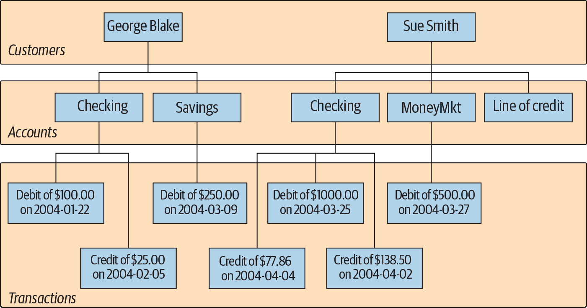
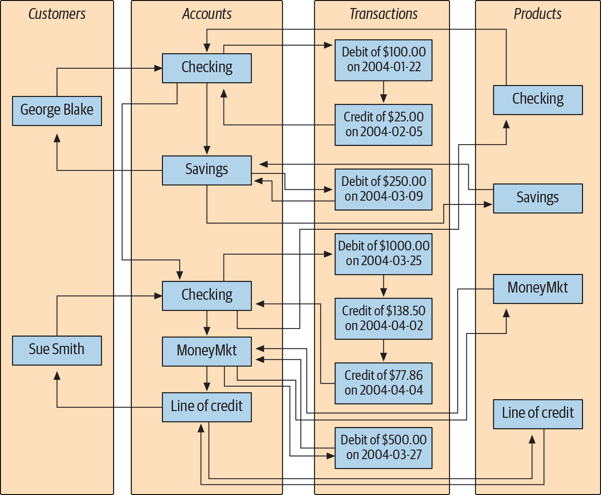
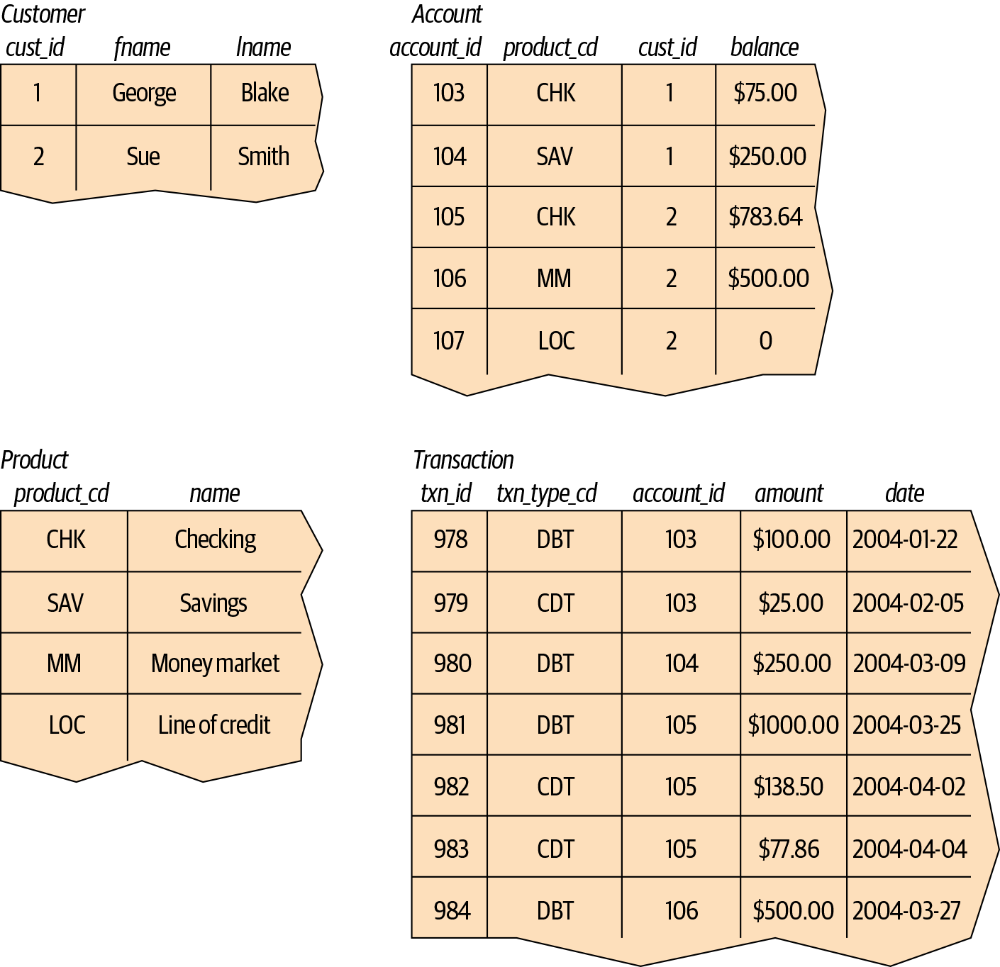
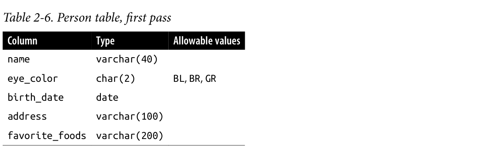
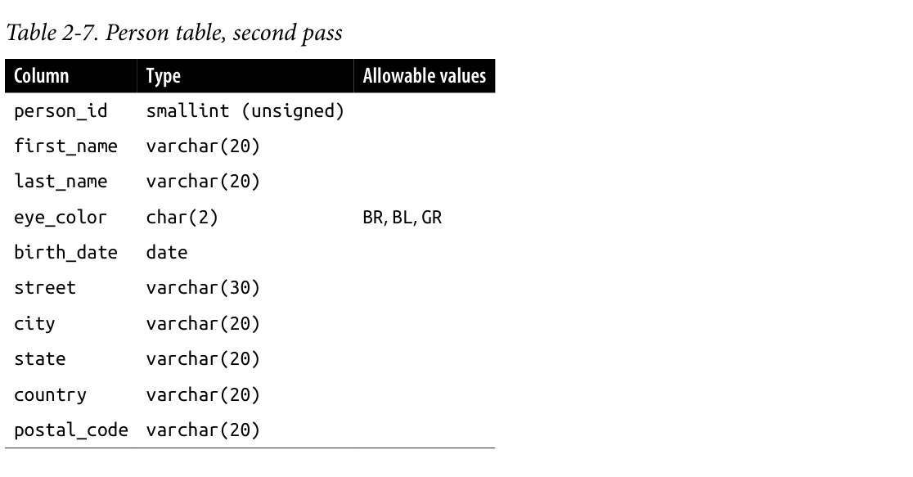
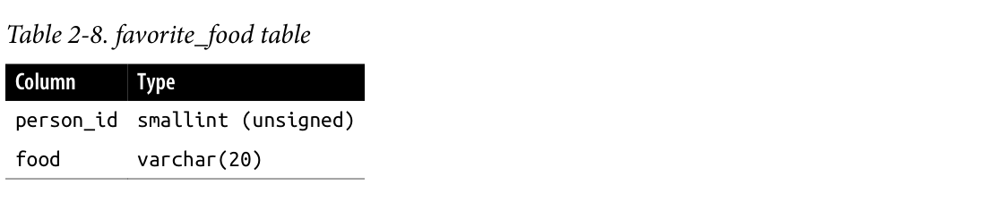

1.1The one-paragraph version
Before it teaches you any syntax, the chapter explains the problem that relational databases solved — and that makes the syntax make sense later.
People have always needed to keep lists of related facts. A phone book is a database: names, numbers, addresses. But paper (and later magnetic tape) is slow, it can only be looked up one way, and it goes stale the moment it's printed. Early computer databases fixed the speed problem but made the shape problem worse: data was stored as trees and chains of pointers, so to find anything you had to know the physical route to it and follow it step by step.
In 1970, E. F. Codd proposed a radical alternative: forget pointers, just use flat tables of rows and columns, and link tables to each other by repeating a small identifier value. You stop describing how to walk to the data and only describe what you want. The language for saying that is SQL, and the database program that carries out your request (deciding the walking route itself) is what you buy from Oracle, Microsoft, IBM or MySQL.
Tables, not trees
Every fact lives in a row of a table. Nothing "contains" anything else.
IDs are the glue
A foreign key value does the job that a pointer did in the old systems.
Declarative
You describe the answer; the database's optimizer picks the path.
One language, many servers
SQL was standardised, so the same query mostly runs anywhere.
1.2Databases before computers
"A database is nothing more than a set of related information."
The book starts deliberately low-tech. A phone book is a database, and it has three problems that every bad data system shares:
- Slow to search — you flip pages until you find the entry.
- Indexed one way only — it's sorted by last name, so "who lives at this address?" is theoretically possible and practically hopeless.
- Instantly out of date — from the day it's printed, it gets less true.
A filing cabinet of patient records has the same flaws. Computerising data fixes all three at once: you can retrieve faster, index the same data in several ways, and update it live.
The very first computer databases ran on magnetic tape. There were always more tapes than tape drives, so humans physically mounted and dismounted reels on request, and because machines had tiny memory, asking for the same data twice often meant reading the same tape twice. Much better than paper — and still nothing like what's possible today, where a single system can manage petabytes with clusters of servers caching gigabytes in RAM.
1.3The messy early systems: hierarchical & network
Data as trees, then as webs — both fast to traverse, painful to query.
The running example through the whole chapter is a tiny bank: two customers (George Blake and Sue Smith), four account products (checking, savings, money market, line of credit), their accounts, and the transactions on those accounts. The same four entities are drawn three different ways, and watching the drawings change is the point.
Hierarchical: data as a family tree
In a hierarchical database, information is stored as one or more trees. Each customer owns a tree; under them hang their accounts, and under each account hang its transactions. Every node has at most one parent — this is called a single-parent hierarchy. The system gives you tools to find one customer's tree and then walk down it.

Network: the same data as a web
A network database stores sets of records plus sets of links between them. Records can now be reached from several directions, because the product records also point back at the accounts of that type. That makes it a multi-parent hierarchy.

The catch shows up the moment you ask a real question. To get the transactions on Sue's money market account you must hand the database a route:
- Find Sue Smith's customer record.
- Follow the link from her record to her list of accounts.
- Walk the chain of accounts until you reach the money market one.
- Follow that record's link to its list of transactions.
Four steps of navigation for one question — and you, the query writer, had to know the structure of the storage to write them.
1.4The relational idea: tables instead of pointers
Codd, 1970: represent data as sets of tables, and let repeated ID values do the linking.
Dr. E. F. Codd of IBM Research published "A Relational Model of Data for Large Shared Data Banks", proposing that data be represented as tables. No pointers to navigate. Instead, redundant data — the same ID value appearing in two tables — connects a row in one table to a row in another. Sounds wasteful; turns out to be the whole trick.

Reading the tables
Across the top of the customer table are its three columns — cust_id, fname, lname. Down the side are two rows, one per customer. How many columns a table may hold varies by server (SQL Server allows 1,024) and is rarely the constraint; how many rows it may hold is limited by disk space and by how big a table you can stand to maintain — not really by the database itself.
Primary keys: a row's name tag
Each table carries something that uniquely identifies a row: the primary key. George Blake is cust_id = 1; nobody else ever gets that number, so it alone is enough to find him. Servers generate these number sets for you, so you don't hand out IDs yourself.
You could key the customer table on fname + lname — a key built from several columns is a compound key. Two problems: plenty of people share a name, and names change when people marry. A primary key must never change once assigned, so a made-up number wins here.
- Natural key — the identifier is real data about the thing (a name, an SSN, an ISBN).
- Surrogate key — a meaningless number invented purely to be unique (cust_id). Safer when real-world facts can change.
Foreign keys: the redundant data that replaced pointers
The account table stores cust_id (who opened it) and product_cd (which product it is). Those are foreign key columns — they identify a single row in another table. They do exactly the job the link lines did in Figures 1-1 and 1-2, but as plain values you can query directly. Taking a value from one table to find its matching row in another is a join (Chapter 3, then in depth in Chapters 5 and 10).
What the model does not allow
Redundancy is allowed only in a tight, deliberate form:
- account.cust_id? Proper — it's the pointer-by-value.
- George's first and last name repeated inside the account table? Improper — a name change would update one place and not the other, and now your database lies.
- One column holding "street, city, state, zip" or a full name? Improper — one column, one fact.
Tidying a design so each independent fact lives in exactly one place (foreign keys excepted) is called normalization.
1.5Words you need (Table 1-1)
The seven terms the rest of the book assumes.
| Term | What it means in this book |
|---|---|
| Entity | Anything the users care about enough to track — customers, parts, geographic locations. |
| Column | One individual piece of data stored in a table. |
| Row | A set of columns that together completely describe an entity (or an action on it). Also called a record. |
| Table | A set of rows, held in memory (nonpersistent) or on disk (persistent). |
| Result set | A nonpersistent table — usually what a query hands back. |
| Primary key | One or more columns that uniquely identify each row of a table. |
| Foreign key | One or more columns that together identify a single row in another table. |
1.6What SQL is (and why it has that name)
A research prototype that got renamed four times and then became a standard.
Codd didn't only describe tables — he also proposed a language for manipulating them, DSL/Alpha. IBM built a prototype from his ideas, simplified DSL/Alpha and called it SQUARE; refining SQUARE produced SEQUEL, which was finally shortened to SQL. It began as a relational data language and has since grown into a language used across many database technologies.
- 1970Codd's relational model paper — data as sets of tables, plus DSL/Alpha.
- Early 1970sSQUARE → SEQUEL → SQL — IBM's prototype language, simplified and renamed.
- mid-1980s → 1986First ANSI standard — work starts in the mid-80s, published 1986.
- 1989 · 1992 · 1999 · 2003 · 2006 · 2008 · 2011 · 2016Revisions — object-oriented features added; later editions focus on integrating XML and JSON.
SQL and the relational model fit together hand in glove because the result of an SQL query is itself a table (a "result set"). That one property does a lot of work: store a query's result set and you've created a new table; feed a query's result set into another query and you've built a subquery (Chapter 9).
1.7Three families of statements
Build the structure, move the data, control the trust.
Schema
Define the structures that hold data: CREATE TABLE and friends.
Data
Manipulate the data inside them: SELECT · INSERT · UPDATE · DELETE.
Transaction
Begin, end, and roll back work — the safety net of Chapter 12.
Create a table with a schema statement, put rows in it with a data statement. Here is the book's taste-test trio, in that order:
CREATE TABLE corporation
(corp_id SMALLINT,
name VARCHAR(30),
CONSTRAINT pk_corporation PRIMARY KEY (corp_id)
);Two columns — corp_id and name — with corp_id declared the primary key. (The data types behind SMALLINT and VARCHAR(30) are Chapter 2's job.)
INSERT INTO corporation (corp_id, name)
VALUES (27, 'Acme Paper Corporation');mysql< SELECT name
-> FROM corporation
-> WHERE corp_id = 27;+------------------------+
| name |
+------------------------+
| Acme Paper Corporation |
+------------------------+
1 row in set (0.00 sec)Notice the mysql< and -> prompts: that's the command-line tool that ships with MySQL, and it's how every example in the book is run and formatted. The -> just means "still reading your statement."
Metadata: the data dictionary
Everything you create with schema statements is itself recorded in a special set of tables called the data dictionary — "data about the database," collectively metadata. And because those are just tables, you can SELECT from them at runtime. Asked to write a report on last month's new accounts? Either hardcode the column names you happen to know today, or query the dictionary and generate the report dynamically so it survives the next schema change. (Chapter 15 goes deep here.)
The book's division of labour follows from this: schema statements mostly need syntax explanation and are covered in Chapter 2; data statements are few in number but rich in subtlety, so most chapters are about them.
1.8SQL is not a programming language
You say what you want. The optimizer decides how to get it.
If you've written Java or Python, you're used to declaring variables, branching with if-then-else, looping, and splitting code into functions — and being in complete control of what the program does.
SQL is the second kind. Your statement specifies inputs and outputs; how it gets executed is up to a component of the database engine called the optimizer. It reads your statement, considers how your tables are configured and which indexes exist, and picks an execution path (the most efficient path in theory; not always in practice). You can nudge it with optimizer hints — "use this index" — but most SQL users never do; that tuning is left to DBAs and performance specialists.
So SQL has to live inside something
Because you can't write a whole application in SQL alone, you embed it in a language. Some databases have their own procedural languages where SQL is part of the grammar — Oracle's PL/SQL, MySQL's stored procedure language, Microsoft's Transact-SQL. From Java or Python you instead go through a toolkit/API, provided by the vendor, a third party, or open source:
| Language | Toolkit |
|---|---|
| Java | JDBC (Java Database Connectivity) |
| C# | ADO.NET (Microsoft) |
| Ruby | Ruby DBI |
| Python | Python DB |
| Go | Package database/sql |
(Table 1-2 in the book.) For interactive poking around, every vendor ships at least a command-line tool, most ship a GUI with a pane for your SQL and a pane for the results, and third-party tools such as SQuirrel reach many servers over one JDBC connection.
1.9The example queries — a first look at SELECT
The promise from Figure 1-3, kept in one statement.
Remember the awkward question — all transactions on George Blake's checking account? In the relational version it's a single command:
SELECT t.txn_id, t.txn_type_cd, t.txn_date, t.amount
FROM individual i
INNER JOIN account a ON i.cust_id = a.cust_id
INNER JOIN product p ON p.product_cd = a.product_cd
INNER JOIN transaction t ON t.account_id = a.account_id
WHERE i.fname = 'George' AND i.lname = 'Blake'
AND p.name = 'checking account';+--------+-------------+---------------------+--------+
| txn_id | txn_type_cd | txn_date | amount |
+--------+-------------+---------------------+--------+
| 11 | DBT | 2008-01-05 00:00:00 | 100.00 |
+--------+-------------+---------------------+--------+
1 row in set (0.00 sec)Read it as a sentence: take these four columns from transaction, for rows reachable from George Blake's row in individual through the matching account and the "checking" product row. No traversing, no chain-walking — the linking values did it. (Note the table is called individual here; that's the book's sample schema, built in Chapter 2.)
If you already happen to know George's customer ID is 8 and checking accounts use code 'CHK', the whole thing collapses to two tables:
SELECT t.txn_id, t.txn_type_cd, t.txn_date, t.amount
FROM account a
INNER JOIN transaction t ON t.account_id = a.account_id
WHERE a.cust_id = 8 AND a.product_cd = 'CHK';Three clauses, every query
Both queries above use three clauses, and almost every query you ever write will too:
SELECT /* one or more things */ ...
FROM /* one or more places */ ...
WHERE /* one or more conditions apply */ ...Anything between /* and */ is a comment in most implementations. And while you read the statement top-to-bottom, the book suggests you build it in a different order: decide which tables you need (FROM), then filter out what you don't want (WHERE), then choose which columns to display (SELECT).
SELECT cust_id, fname
FROM individual
WHERE lname = 'Smith';Search individual for rows whose lname is 'Smith'; hand back their cust_id and fname.
Changing data — and a typo
INSERT INTO product (product_cd, name)
VALUES ('CD', 'Certificate of Depysit')Whoops — "Depysit". Fix it with an UPDATE:
UPDATE product
SET name = 'Certificate of Deposit'
WHERE product_cd = 'CD';The WHERE here is doing the same filtering job as in a query, because an update must first decide which rows to touch. Since product_cd is that table's primary key, you expect exactly one row to change — or zero, if the value isn't there.
1.10MySQL and the other servers
They do roughly the same thing; the book deliberately sticks to common ground.
Relational databases have been commercial products for over three decades. The mature big three:
- Oracle Database — Oracle Corporation
- SQL Server — Microsoft
- DB2 Universal Database — IBM
All three do approximately the same job; some are better at extreme scale or throughput, others at objects, large files, or XML documents. All track the ANSI standard fairly well, which is exactly why the author keeps showing you statements that run on any of them with little or no change.
In open source, the two most commonly used servers are PostgreSQL and MySQL. MySQL is free and painless to download and install, so it's what every example in the book runs on (version 8.0), with the mysql command-line tool formatting results. Even if you'll never use MySQL in production, the advice is to install it, load the sample schema, and follow along.
1.11SQL unplugged
New technologies, same query language.
A lot changed between the book's second and third editions. Relational databases remain heavily used, but systems built for the scale of Amazon and Google emerged alongside them: Hadoop, Spark, NoSQL, NewSQL — distributed, scalable, usually deployed on clusters of commodity servers. The book won't explore them in depth, but points out what they share with your old relational database: SQL.
That creates a new need. Real organisations keep data in several technologies at once, so a report might have to combine Oracle, Hadoop, JSON files, CSV files and Unix log files in one answer. You have to unplug SQL from any single server and offer it as a service that spans many sources. Apache Drill, an open source query engine for exactly this, gets its own chapter (Chapter 18).
1.12What's in store, and the chapter in one screen
Where the book goes next — plus a cheat sheet worth keeping open.
The next four chapters introduce SQL data statements, with heavy emphasis on the main clauses of SELECT. You'll work with the Sakila sample schema, created in Chapter 2 and used for the rest of the book, so that you stop having to study unfamiliar tables every time you meet a new example. If one dataset gets tedious, add your own tables. Once the basics are solid, the remaining chapters branch into mostly independent deep topics — so when you're confused, you're allowed to skip ahead and come back.
For more on relational theory and database history, the book recommends three C. J. Date titles (Database in Depth: Relational Theory for Practitioners; An Introduction to Database Systems, 8th ed.; The Database Relational Model: A Retrospective Review and Analysis) and Wikipedia's article on the database management system.
Cheat sheet
| Idea | In one line |
|---|---|
| Database | A set of related information, stored so it can be found many ways and updated live. |
| Hierarchical | Trees. One parent per node. You must walk the path. |
| Network | Records + links. Multi-parent. Still path-walking. |
| Relational | Tables + repeated ID values. No paths to memorise. |
| Primary key | Unique per row, never changes. Surrogate beats natural when real facts can change. |
| Foreign key | A value pointing at one row in another table — a join's raw material. |
| Normalization | Each independent fact in exactly one place, foreign keys excepted. |
| Schema vs data | CREATE TABLE builds the shelf; INSERT/SELECT move the books. |
| Metadata | The data dictionary: tables describing your tables, queryable like any other. |
| Nonprocedural | Declare the result; the optimizer chooses the route. |
| SELECT/FROM/WHERE | Things / places / conditions — the bones of nearly every query. |
| Rows affected | Read the feedback line. It catches your typos and your disasters. |
Questions to test yourself
- Why is a phone book a database, and which three flaws does it share with a filing cabinet?
- What did hierarchical and network systems use to connect related data, and why is that a problem for ad-hoc questions?
- What replaced pointers in the relational model?
- Why is cust_id a better primary key for a customer than fname+lname? Which is the surrogate, which the natural?
- Why is storing a customer's name inside the account table improper, while storing their cust_id is fine?
- Match each to schema, data, or transaction: CREATE TABLE, INSERT, SELECT, rollback.
- What does the optimizer do, and what is a hint?
- You ran a DELETE and the client said 847 rows affected. What probably happened?
2.0Creating and Populating a Database
Chapter 1 was theory. This one is hands on: how to get a MySQL server, how to pick a data type for a column, how to turn a rough idea into a normalized CREATE TABLE statement, and how to put rows in and take them out. It ends with four ways to break the rules and the exact errors the server throws back.
2.1The chapter in one paragraph
Everything in this chapter is a setup step for the rest of the book.
You install or borrow a MySQL 8.0 server, talk to it with the mysql command-line tool, and learn that every column must be declared with a type — character (char/varchar/text), numeric (tinyint…bigint, float/double), or temporal (date/datetime/timestamp/year/time). You then design a person table the way a real designer does — brainstorm the facts, then attack the draft with normalization until each column holds exactly one fact and a key guarantees uniqueness. Two tables come out of that: person and favorite_food, tied together by a foreign key. You create them, let the server generate primary keys with AUTO_INCREMENT, insert rows, correct one with UPDATE, delete one, and finally load the Sakila sample database that the rest of the book queries.
2.2Getting a server, and the mysql tool
Two ways in, then the handful of client commands you'll live inside.
The book offers a choice for experimenting with the example data:
1 · Install MySQL 8.0+
Download the server, then load the Sakila sample database from MySQL's "Example Databases" page. Your work persists; you own the box.
2 · Use the MySQL Sandbox
A free Katacoda scenario starts a server with Sakila already loaded and drops you at a mysql> prompt. Easiest path — but changes vanish when the session ends.
If you install it yourself, loading the sample data means downloading the sakila files, putting them in a folder, and running the two schema/data scripts through the client's source command. (Sakila is MySQL's own BSD-licensed example database about a fictitious movie-rental chain.)
Then you're in the client. These are the commands the chapter leans on — not SQL, but the tool's own verbs:
mysql -u root -p;
SHOW DATABASES;
USE sakila;
SHOW TABLES;
DESCRIBE person; /* or: DESC person; */
QUIT; /* or EXIT; */A shortcut worth knowing: pass the database on the command line (mysql -u root -p sakila) and you skip typing USE sakila; every session.
You can also ask the server questions that need no table at all:
mysql> SELECT now();
+---------------------+
| now() |
+---------------------+
| 2019-04-04 20:44:26 |
+---------------------+
1 row in set (0.01 sec)Notice the last line of every result: "N rows in set (T.TT sec)". That habit — read the feedback line — started in Chapter 1 and pays off throughout this one.
2.3Choosing a data type
Three families: characters, numbers, time. Pick the smallest thing that fits.
All mainstream servers store the same basic kinds of data; they diverge on specialty types (XML, JSON, spatial). Since ~98% of real columns are simple, the chapter covers only these three families.
Character
- char(n) — fixed length, right-padded with spaces, always n bytes
- varchar(n) — variable length, no padding
- Max size: 255 bytes for char, 65,535 for varchar
- Rule of thumb: char when every value is the same length (state codes), varchar when they vary (names)
Numeric
- Integers for whole numbers: tinyint → bigint (1 → 8 bytes)
- unsigned = "never negative", which doubles the positive headroom
- Booleans are just 0/1 integers
- float(p,s) / double(p,s) for fractions
Temporal
- date — day only
- datetime — day + time, manual
- timestamp — same fields, but the server fills it in automatically on insert and on modify
- year · time — elapsed duration, no date part
Text types, for when 64 KB isn't enough (Table 2-1)
| Type | Max bytes | Use it for |
|---|---|---|
| tinytext | 255 | obsolete — varchar already beats it |
| text | 65,535 | same as varchar's ceiling |
| mediumtext | 16,777,215 | documents, emails, XML |
| longtext | 4,294,967,295 | large documents |
Trade-offs: oversized data is truncated silently, trailing spaces are kept, and sorting or grouping on a text column uses only the first 1,024 bytes. These type names are MySQL-specific — SQL Server has one text type, Oracle and DB2 use clob. Other ceilings to keep in mind: Oracle allows 2,000 bytes for char and 4,000 for varchar2; SQL Server allows 8,000 for both but 2 GB via varchar(max).
Integer sizes (Table 2-2), and why you shouldn't grab bigint out of fear
| Type | Signed range | Unsigned range |
|---|---|---|
| tinyint | −128 … 127 | 0 … 255 |
| smallint | −32,768 … 32,767 | 0 … 65,535 |
| mediumint | −8,388,608 … 8,388,607 | 0 … 16,777,215 |
| int | −2,147,483,648 … 2,147,483,647 | 0 … 4,294,967,295 |
| bigint | −2⁶³ … 2⁶³−1 | 0 … 2⁶⁴−1 |
MySQL allocates real bytes per row — 1 for tinyint, 8 for bigint — so choose the smallest type that comfortably holds the largest number you can imagine. Precision and scale behave the same way for float/double: precision is total digits, scale is digits after the decimal point. A float(4,2) column stores 27.44 and 8.19 happily, rounds 17.8675 to 17.87, and errors on 178.375 because it needs five digits. (And note: unsigned on a floating-point column only blocks negatives — it doesn't extend the range.)
Dates: format strings are the contract (Tables 2-4 & 2-5)
| Type | Default format | Range |
|---|---|---|
| date | YYYY-MM-DD | 1000-01-01 … 9999-12-31 |
| datetime | YYYY-MM-DD HH:MI:SS[.fraction] | 1000-01-01 00:00:00 … 9999-12-31 23:59:59 |
| timestamp | YYYY-MM-DD HH:MI:SS[.fraction] | 1970-01-01 … 2038-01-18 |
| year | YYYY | 1901 … 2155 |
| time | HHH:MI:SS | −838:59:59 … 838:59:59 |
The format string isn't cosmetic — it tells you both how the value displays on retrieval and how you must write it in an insert or update. To store March 23, 2020 in a date column you pass the string '2020-03-23'. datetime, timestamp and time accept fractional seconds down to microseconds — declare datetime(2) for hundredths.
One more reason to store dates as dates and not strings: the supported range differs per server — Oracle spans 4712 BC to 9999 AD, SQL Server starts at 1753 AD (1 AD with datetime2), and MySQL sits between them at 1000 AD–9999 AD. Storing historical dates? Check your server first.
For international text, MySQL supports many character sets; SHOW CHARACTER SET lists them, and any set whose Maxlen is greater than 1 is a multibyte set (Japanese, Korean and friends need more than one byte per character). MySQL 8 defaults to utf8mb4 where older versions defaulted to latin1, and you can override per column (varchar(20) character set latin1) or for a whole database:
CREATE DATABASE european_sales CHARACTER SET latin1;2.4Design: from napkin to two normalized tables
The most instructive pages in the chapter — watch a bad design get argued into a good one.
Rather than hand you a finished schema, the author builds one live, in three named steps. Keep a small business in mind: a person, an address, an eye colour, a birth date, and their favourite foods.
Step 1 — Design (brainstorm the facts)
List what describes a person, name each column, assign a type. The first pass is honest and wrong:

Step 2 — Refinement (attack your own draft)
Chapter 1's normalization rule comes to collect the debt. Four objections:
- name is a compound value — first and last name in one column.
- Nothing guarantees uniqueness. Two people can share a name, eye colour and birth date, so no column (or combination) can serve as a primary key.
- address is also compound — street, city, state, country, postal code.
- favorite_foods is a list in a single cell — zero, one or many items crammed into one column. It belongs in its own table with a foreign key back to the person.


2.5CREATE TABLE, and the three constraints
Design becomes DDL: a primary key, a foreign key, and a check that MySQL quietly ignores.
Step 3 turns Table 2-7 into SQL. Read the columns, then the last line — that line is the point:
CREATE TABLE person
(person_id SMALLINT UNSIGNED,
fname VARCHAR(20),
lname VARCHAR(20),
eye_color CHAR(2),
birth_date DATE,
street VARCHAR(30),
city VARCHAR(20),
state VARCHAR(20),
country VARCHAR(20),
postal_code VARCHAR(20),
CONSTRAINT pk_person PRIMARY KEY (person_id)
);Only the final clause is new: a constraint is a named rule attached to the table. Here it's a primary key constraint on person_id, named pk_person.
Check constraints — and MySQL's catch
A check constraint restricts the values a column may hold:
eye_color CHAR(2) CHECK (eye_color IN ('BR','BL','GR')),Most servers enforce that. MySQL parses it and then ignores it — so the book uses the MySQL idiom instead, an enum data type that bakes the allowed list into the type itself:
eye_color ENUM('BR','BL','GR'),and the resulting statement, run in the client:
mysql< CREATE TABLE person
-> (person_id SMALLINT UNSIGNED,
-> fname VARCHAR(20),
-> lname VARCHAR(20),
-> eye_color ENUM('BR','BL','GR'),
-> birth_date DATE,
-> street VARCHAR(30),
-> city VARCHAR(20),
-> state VARCHAR(20),
-> country VARCHAR(20),
-> postal_code VARCHAR(20),
-> CONSTRAINT pk_person PRIMARY KEY (person_id)
-> );
Query OK, 0 rows affected (0.37 sec)"0 rows affected" is the expected success message for a schema statement — nothing was created in a table, the table itself was created. Verify it with DESC person;, and read its six columns as a checklist:
| Column | What it tells you |
|---|---|
| Field | the column name |
| Type | its data type, as the server stored it |
| Null | may the column be omitted on insert? (NO = required) |
| Key | does it participate in a key? PRI primary, MUL non-unique/foreign |
| Default | what fills in if you omit it |
| Extra | anything else — e.g. auto_increment, DEFAULT_GENERATED on update CURRENT_TIMESTAMP |
The foreign key that makes the child table a child
mysql< CREATE TABLE favorite_food
-> (person_id SMALLINT UNSIGNED,
-> food VARCHAR(20),
-> CONSTRAINT pk_favorite_food PRIMARY KEY (person_id, food),
-> CONSTRAINT fk_fav_food_person_id FOREIGN KEY (person_id)
-> REFERENCES person (person_id)
-> );
Query OK, 0 rows affected (0.10 sec)Two differences from person, and both matter:
- A two-column primary key. One person can like many foods, so person_id alone isn't unique — you need (person_id, food) together. This is the compound key Chapter 1 named.
- A foreign key constraint. person_id in this table may only contain values that already exist in person. You cannot record that person 27 likes pizza if person 27 doesn't exist.
The design, drawn
person
favorite_food
Diagram drawn from Tables 2-7 and 2-8 — the book itself has no figure in this chapter.
2.6Who numbers the primary keys?
Never "max + 1". Let the server do it.
You need a person_id before you can insert. Two options suggest themselves:
- Read the current maximum and add one. Looks fine, and it isn't: in a multi-user system two people can read the same maximum at the same instant and both insert the same key. This is a race condition, and it's the reason this pattern never survives contact with a real server.
- Let the server generate it. Every server has a safe mechanism for this — Oracle uses a separate object called a sequence; MySQL puts AUTO_INCREMENT on the column.
The table is already built, so the chapter changes it with another schema statement, ALTER TABLE:
ALTER TABLE person MODIFY person_id SMALLINT UNSIGNED AUTO_INCREMENT;Now DESC person; shows auto_increment in the Extra column — and inserting becomes a matter of passing null for the key and letting MySQL hand back the next number (it starts at 1).
2.7INSERT, UPDATE, DELETE — and reading the feedback
Three statements, one shared habit: check how many rows were touched.
An INSERT has exactly three parts — which table, which columns, which values — and the column list and value list must match in number and type:
mysql< INSERT INTO person
-> (person_id, fname, lname, eye_color, birth_date)
-> VALUES (null, 'William','Turner', 'BR', '1972-05-27');
Query OK, 1 row affected (0.22 sec)Three things to notice in that one statement:
- null for person_id is how you ask AUTO_INCREMENT for the next number.
- The five address columns are simply absent — legal, because they allow nulls. They get filled in later, or never (an order cancelled before shipping has no meaningful ship_date).
- The date went in as a string. MySQL converts it, as long as it matches the column's expected format — which is the seed of the error in §2.8.
mysql< SELECT person_id, fname, lname, birth_date
-> FROM person;
+-----------+---------+--------+------------+
| person_id | fname | lname | birth_date |
+-----------+---------+--------+------------+
| 1 | William | Turner | 1972-05-27 |
+-----------+---------+--------+------------+
1 row in set (0.06 sec)The server invented person_id = 1. With one row in the table you can get away with no WHERE; with more, you filter — and the chapter shows that the filter doesn't have to use the key at all:
SELECT person_id, fname, lname, birth_date
FROM person
WHERE person_id = 1;
SELECT person_id, fname, lname, birth_date
FROM person
WHERE lname = 'Turner';William's three favourite foods become three inserts — one row per value, which is exactly what pulling the list out of the person table bought us:
mysql< INSERT INTO favorite_food (person_id, food)
-> VALUES (1, 'pizza');
Query OK, 1 row affected (0.01 sec)
mysql< INSERT INTO favorite_food (person_id, food)
-> VALUES (1, 'cookies');
Query OK, 1 row affected (0.00 sec)
mysql< INSERT INTO favorite_food (person_id, food)
-> VALUES (1, 'nachos');
Query OK, 1 row affected (0.01 sec)and a first taste of sorting:
mysql< SELECT food
-> FROM favorite_food
-> WHERE person_id = 1
-> ORDER BY food;
+---------+
| food |
+---------+
| cookies |
| nachos |
| pizza |
+---------+
3 rows in set (0.02 sec)A second person arrives, this time with an address — so the column and value lists grow by five:
mysql< INSERT INTO person
-> (person_id, fname, lname, eye_color, birth_date,
-> street, city, state, country, postal_code)
-> VALUES (null, 'Susan','Smith', 'BL', '1975-11-02',
-> '23 Maple St.', 'Arlington', 'VA', 'USA', '20220');
Query OK, 1 row affected (0.01 sec)UPDATE — filling in what you skipped
mysql< UPDATE person
-> SET street = '1225 Tremont St.',
-> city = 'Boston',
-> state = 'MA',
-> country = 'USA',
-> postal_code = '02138'
-> WHERE person_id = 1;
Query OK, 1 row affected (0.04 sec)
Rows matched: 1 Changed: 1 Warnings: 0MySQL answers an update with two lines, and they answer two different questions: Rows matched = how many rows satisfied the WHERE; Changed = how many were actually written. Matching one and changing one is the healthy case. The number of rows an unguarded statement touches is decided entirely by your WHERE:
WHERE person_id = 1 -- exactly one row (a primary key)
WHERE person_id < 10 -- both William and Susan
/* no WHERE clause */ -- every row in the tableDELETE
William and Susan aren't getting along; since William was there first, Susan is removed the same careful way:
mysql< DELETE FROM person
-> WHERE person_id = 2;
Query OK, 1 row affected (0.01 sec)Same rules as UPDATE: a key identifies one row, a range deletes several, and no WHERE at all empties the table. Chapter 1 flagged this exact hazard; Chapter 2 is where you build the reflex of reading "N rows affected" before you relax.
2.8When good statements go bad
Four mistakes, four error messages — learn to read them, not fear them.
Every statement so far obeyed the rules of the two table definitions. Here's what happens when one doesn't.
① Duplicate primary key
A primary key means unique, so supplying your own key value lets you collide with an existing row — this attempt to bypass AUTO_INCREMENT and force 1 again is refused:
What it does not prevent: two people with identical names, addresses and birth dates, as long as their keys differ. Uniqueness is a property of the key, not of the row's meaning — so a "no duplicate customers" rule needs a UNIQUE constraint on the relevant columns, which is why the same data entered with null for the key (letting the server assign 3) succeeds just fine.
② Nonexistent foreign key
Referential integrity means a child row can't reference a parent that isn't there. Person 999 does not exist, so their dinner preference has nowhere to hang:
The vocabulary is parent (person) and child (favorite_food), named for who depends on whom. Practical consequence for loading data: parents first, then children. And remember the fine print — this check only runs on InnoDB tables.
③ Value outside the allowed set
eye_color accepts BR, BL, GR. Nobody's eyes are 'ZZ':
The wording is genuinely confusing for what's happening. "Data truncated" is the generic complaint MySQL raises when a value doesn't fit the column's definition — for an enum an invalid member is treated as the empty value, so the server reports truncation rather than "invalid option". Read it as the value is not allowed here.
④ Date that doesn't match the format
Recall the earlier win: '1972-05-27' worked because it matched YYYY-MM-DD. Change the order and the conversion fails:
The fix is to stop relying on the default and state the format explicitly with str_to_date:
mysql< UPDATE person
-> SET birth_date = str_to_date('DEC-21-1980' , '%b-%d-%Y')
-> WHERE person_id = 1;
Query OK, 1 row affected (0.12 sec)
Rows matched: 1 Changed: 1 Warnings: 0Which also makes the point that a date column stores a value, not text: William is now eight years younger, no surgery required. Careful with MySQL's format tokens — they are not the YYYY-MM-DD style shown earlier. A few you'll actually need: %Y four-digit year, %m numeric month, %M full month name, %b abbreviated month, %d day of month, %H hour 24, %h hour 12 with %p AM/PM, %i minutes, %s seconds, %f microseconds, %j day of year, %W/%w weekday name/number, %a abbreviated weekday, %c numeric month 0–12.
2.9The Sakila database
The toy tables were the tutorial. This is the one you'll actually query for 400 pages.
person and favorite_food exist to teach schema creation — they're not used again, and the book says to feel free to drop them. The real playground is Sakila, MySQL's sample database modelling a chain of DVD rental stores (yes, dated — the book jokes you can rebrand it as a streaming company and ignore the staff and address tables). Full schema diagram is in the book's Appendix A.
film
A movie that has been released and can be rented.
actor
A person who acts in films.
customer
A person who watches films.
category
A genre of films.
payment
A rental of a film by a customer.
language
A language spoken by the actors of a film.
film_actor
An actor in a film — the link table joining films to actors.
inventory
A physical copy of a film available for rental.
SHOW TABLES; lists 23 relations in a fresh Sakila install — the eight above plus store, rental, address, city, country, staff and several views that end in _list or _info (actor_info, customer_list, film_list, nicer_but_slower_film_list, sales_by_film_category, sales_by_store…). If person and favorite_food appear in your list, here's the cleanup:
mysql< DROP TABLE favorite_food;
Query OK, 0 rows affected (0.56 sec)
mysql< DROP TABLE person;
Query OK, 0 rows affected (0.05 sec)The order isn't arbitrary: favorite_food references person, so the child has to go before the parent — the same dependency error ② enforced, applied to schema objects.
You meet Sakila properly with DESC customer;, and it rewards a close read, because here is every concept of this chapter at once in real production-ish DDL:
mysql< desc customer;
+-------------+--------------+------+-----+-------------+----------------------+
| Field | Type | Null | Key | Default | Extra |
+-------------+--------------+------+-----+-------------+----------------------+
| customer_id | smallint(5) | NO | PRI | NULL | auto_increment |
| | unsigned | | | | |
| store_id | tinyint(3) | NO | MUL | NULL | |
| | unsigned | | | | |
| first_name | varchar(45) | NO | | NULL | |
| last_name | varchar(45) | NO | MUL | NULL | |
| email | varchar(50) | YES | | NULL | |
| address_id | smallint(5) | NO | MUL | NULL | |
| | unsigned | | | | |
| active | tinyint(1) | NO | | 1 | |
| create_date | datetime | NO | | NULL | |
| last_update | timestamp | YES | | CURRENT_ | DEFAULT_GENERATED on |
| | | | | TIMESTAMP | update CURRENT_ |
| | | | | | TIMESTAMP |
+-------------+--------------+------+-----+-------------+----------------------+| Column | What Sakila is telling you |
|---|---|
| customer_id | smallint unsigned + auto_increment + PRI — the exact pattern you built by hand in §2.6. |
| store_id, address_id | MUL in the Key column: indexed because they're foreign keys to other tables. |
| last_name | MUL with no foreign key — a plain index, there to speed up searching by name. |
| The only nullable column — matching §2.7's rule that optional facts may stay absent. | |
| active | tinyint(1) default 1: the boolean from §2.3's "is this order shipped?" example, live. |
| create_date | datetime — recorded once, by whoever inserts. |
| last_update | timestamp with DEFAULT_GENERATED on update CURRENT_TIMESTAMP — the self-maintaining column, so you never trust an app to remember to stamp its own edits. |
2.10Chapter 2 cheat sheet & self-test
The vocabulary, the commands, and eight questions.
| Idea | In one line |
|---|---|
| char vs varchar | Fixed length (padded, always n bytes) vs variable. Same-length values → char; varying → varchar. |
| 65,535 | Bytes a varchar can hold; beyond that use mediumtext/longtext. |
| unsigned | "never negative" — doubles positive headroom on integers; on floats it only blocks the minus sign. |
| precision, scale | float(4,2) = 4 digits total, 2 after the point. Overflow rounds or errors. |
| date vs datetime vs timestamp | Day / day+time you supply / day+time the server maintains. |
| NULL | The absence of a value — not applicable, unknown, or empty set. A column can be declared NOT NULL. |
| enum | MySQL's way to restrict a column's values when CHECK isn't enforced. |
| compound PK | No single column unique? Combine them — PRIMARY KEY (person_id, food). |
| FK constraint | Values must exist in the parent table. InnoDB only. Insert parents before children. |
| AUTO_INCREMENT | Server-assigned key; pass null to get it. Never "max + 1". |
| ALTER TABLE … MODIFY | Redefine a column of an existing table (wrap it in foreign_key_checks off/on). |
| Rows matched / Changed | Two different numbers on an update — one is your WHERE, one is the write. |
| str_to_date | Convert text to a date by declaring the format ('%b-%d-%Y'), don't rely on the default. |
| DROP TABLE order | Child before parent. |
Questions to test yourself
- Your notes column will hold a paragraph or two, maybe a page. char, varchar or a text type — and why?
- A flag column records yes/no. Which MySQL type does the book use for that, and what does its default mean?
- Why is timestamp better than datetime for "when did anyone last edit this row"?
- Name the four objections that turned Table 2-6 into Table 2-7 and 2-8.
- Why can't favorite_food be keyed on person_id alone?
- You try INSERT INTO favorite_food VALUES (42,'tofu') and get error 1452. What are the two possible fixes, and which is usually the honest one?
- An update reports Rows matched: 3, Changed: 0. What happened?
- Why must SET foreign_key_checks=0 surround the ALTER TABLE … AUTO_INCREMENT statement, and what must you not forget afterwards?
What's next
Chapter 3, Query Primer, is where the book stops setting things up and starts asking questions: the anatomy of a SELECT and how its clauses interact — select, from, where, group by, having, order by — the three-clause skeleton from Chapter 1 growing into the full shape you'll use for the rest of the book, all against Sakila — which is exactly what Chapter 3 below covers.
3.0Query Primer
Chapters 1 and 2 gave you theory and a schema. This is the first real chapter on asking questions: the six clauses that make up a SELECT statement, what each one does, and — crucially — the order the server evaluates them in, which is not the order you write them. Every query in the rest of the book is built from these six parts.
3.1The chapter in one paragraph
A tour, not a manual — the deep dives come in Chapters 4 through 10.
A query travels from your client to the server over a connection the server handed you at login (and it gives that connection a number you should note, because it's what your DBA needs to kill your runaway query). Before anything executes, the server clears three gates — do you have permission to run this statement, permission to touch this data, and is the syntax valid — and then hands the statement to the optimizer, which decides join order and index usage and produces an execution plan. What comes back is a result set: just another table of rows and columns, which is why the mysql tool prints it inside the same +-| box you've already seen, and why "Empty set" is a normal, non-error answer. On top of that machinery sit six clauses — select, from, where, group by, having, order by — of which only select is mandatory in MySQL. The chapter walks each one against Sakila, shows that a query without ORDER BY has no order at all, and ends with four exercises.
3.2How a query gets run
Connection → three checks → optimizer → plan → result set.
You log in with a username, password, and possibly a hostname. The server verifies them and issues a connection, which the requesting application (the mysql tool) holds until it releases it — by you typing quit — or the server shuts down. Each connection gets an ID, printed at login:
Welcome to the MySQL monitor. Commands end with ; or \g.
Your MySQL connection id is 11
Server version: 8.0.15 MySQL Community Server - GPLThe optimizer is the same agent Chapter 1 introduced: it decides things like the order in which to join the tables named in your FROM clause and which indexes to use, then emits a plan the server follows. Understanding and influencing plan choice is a whole career — the book points at High Performance MySQL (Schwartz et al., O'Reilly) for index generation, plan analysis, query hints and server tuning. You will not need any of it to read this book.
The two answers you can get back are both normal, and beginners misread the first one as an error:
mysql> SELECT first_name, last_name
-> FROM customer
-> WHERE last_name = 'ZIEGLER';
Empty set (0.02 sec)mysql> SELECT *
-> FROM category;
+-------------+-------------+---------------------+
| category_id | name | last_update |
+-------------+-------------+---------------------+
| 1 | Action | 2006-02-15 04:46:27 |
| 2 | Animation | 2006-02-15 04:46:27 |
| 3 | Children | 2006-02-15 04:46:27 |
| 4 | Classics | 2006-02-15 04:46:27 |
| 5 | Comedy | 2006-02-15 04:46:27 |
| 6 | Documentary | 2006-02-15 04:46:27 |
| 7 | Drama | 2006-02-15 04:46:27 |
| 8 | Family | 2006-02-15 04:46:27 |
| 9 | Foreign | 2006-02-15 04:46:27 |
| 10 | Games | 2006-02-15 04:46:27 |
| 11 | Horror | 2006-02-15 04:46:27 |
| 12 | Music | 2006-02-15 04:46:27 |
| 13 | New | 2006-02-15 04:46:27 |
| 14 | Sci-Fi | 2006-02-15 04:46:27 |
| 15 | Sports | 2006-02-15 04:46:27 |
| 16 | Travel | 2006-02-15 04:46:27 |
+-------------+-------------+---------------------+
16 rows in set (0.02 sec)Read a result box as three parts: the header row naming the columns, the data rows, and the footer counting them. SELECT * means "every column" — fine for exploring, and the thing to avoid in application code, because your program stops making sense the day someone adds a column to the table.
3.3The six clauses — and their true order
Table 3-1 is the map of the rest of the chapter, and of the rest of the book.
| Clause | Purpose |
|---|---|
| select | Determines which columns to include in the query's result set |
| from | Identifies the tables to retrieve data from, and how they should be joined |
| where | Filters out unwanted data |
| group by | Groups rows together by common column values |
| having | Filters out unwanted groups |
| order by | Sorts the rows of the final result set by one or more columns |
All six are in the ANSI specification. In MySQL only select is mandatory — the other five are optional, though you'll usually reach for two or three.
Bar length is only decorative; the numbers are the point. Blue = uses raw columns, green = the row filter, amber = the group filter. SELECT waits until the groups are cooked because until then the server doesn't know which columns even exist.
The chapter states the principle outright: even though SELECT is the first clause of the statement, it is one of the last the server evaluates — because to decide what to include in the result set, you first need to know the full set of columns that could be included, and that's decided by FROM.
3.4The select clause
Its job: choose which of all possible columns appear in the result.
Three queries against the same table show the whole clause. First, everything:
mysql> SELECT *
-> FROM language;
+-------------+----------+---------------------+
| language_id | name | last_update |
+-------------+----------+---------------------+
| 1 | English | 2006-02-15 05:02:19 |
| 2 | Italian | 2006-02-15 05:02:19 |
| 3 | Japanese | 2006-02-15 05:02:19 |
| 4 | Mandarin | 2006-02-15 05:02:19 |
| 5 | French | 2006-02-15 05:02:19 |
| 6 | German | 2006-02-15 05:02:19 |
+-------------+----------+---------------------+
6 rows in set (0.03 sec)Then the same result written out longhand — the book's point being that these two are identical, because language has exactly those three columns:
mysql> SELECT language_id, name, last_update
-> FROM language;
+-------------+----------+---------------------+
| language_id | name | last_update |
+-------------+----------+---------------------+
| 1 | English | 2006-02-15 05:02:19 |
| 2 | Italian | 2006-02-15 05:02:19 |
| 3 | Japanese | 2006-02-15 05:02:19 |
| 4 | Mandarin | 2006-02-15 05:02:19 |
| 5 | French | 2006-02-15 05:02:19 |
| 6 | German | 2006-02-15 05:02:19 |
+-------------+----------+---------------------+
6 rows in set (0.00 sec)And finally a projection down to one column — 6 rows either way, since SELECT chooses columns, not rows:
mysql> SELECT name
-> FROM language;
+----------+
| name |
+----------+
| English |
| Italian |
| Japanese |
| Mandarin |
| French |
| German |
+----------+
6 rows in set (0.00 sec)You are not limited to stored columns
A SELECT list can contain four kinds of thing — and this is what makes the clause a projection and a computation at once:
- Table columns — language_id
- Literals — a number or string written into every row, e.g. 'COMMON'
- Expressions — e.g. transaction.amount * -1
- Function calls — built-in like ROUND(transaction.amount, 2) or upper(name), or user-defined
mysql> SELECT language_id,
-> 'COMMON' language_usage,
-> language_id * 3.1415927 lang_pi_value,
-> upper(name) language_name
-> FROM language;
+-------------+----------------+---------------+---------------+
| language_id | language_usage | lang_pi_value | language_name |
+-------------+----------------+---------------+---------------+
| 1 | COMMON | 3.1415927 | ENGLISH |
| 2 | COMMON | 6.2831854 | ITALIAN |
| 3 | COMMON | 9.4247781 | JAPANESE |
| 4 | COMMON | 12.5663708 | MANDARIN |
| 5 | COMMON | 15.7079635 | FRENCH |
| 6 | COMMON | 18.8495562 | GERMAN |
+-------------+----------------+---------------+---------------+
6 rows in set (0.04 sec)Note COMMON repeated on every row — a literal isn't a constant per query, it's a column whose value happens to be the same everywhere. And if all you want is to evaluate functions or an expression, there's no table to read, so there's no need for a FROM at all:
mysql> SELECT version(),
-> user(),
-> database();
+-----------+----------------+------------+
| version() | user() | database() |
+-----------+----------------+------------+
| 8.0.15 | root@localhost | sakila |
+-----------+----------------+------------+
1 row in set (0.00 sec)This is Chapter 2's dual note inverted: MySQL lets you omit FROM outright, and it also accepts Oracle's FROM dual when you need the portable form. A quick "who am I, which server, which database" check like the one above is the single most useful habit for confirming you're pointed at the database you think you are.
3.5Column aliases
Name your own output columns — and always name the computed ones.
The mysql tool labels columns for you, but auto-labels are bad in two cases: a table column whose stored name is poor or ambiguous, and — much more importantly — any column produced by an expression or function, which has no natural name at all. You supply one by writing it after the item in the list:
SELECT language_id,
'COMMON' language_usage,
language_id * 3.1415927 lang_pi_value,
upper(name) language_name
FROM language;Compare the headers: without aliases, you'd be looking at COMMON, language_id * 3.1415927 and upper(name) as column names — unreadable in a report, and unusable from code. With them, the result set is a table with a real schema, which is what you want when Java or Python is consuming it.
SELECT language_id,
'COMMON' AS language_usage,
language_id * 3.1415927 AS lang_pi_value,
upper(name) AS language_name
FROM language;3.6Removing duplicates with DISTINCT
5,462 rows collapse to 200 — and the cost of doing it.
Ask for the IDs of all actors who appeared in a film and you get one row per appearance:
mysql> SELECT actor_id FROM film_actor ORDER BY actor_id;
+----------+
| actor_id |
+----------+
| 1 |
| 1 |
| 1 |
| 1 |
| 1 |
| ... |
| 200 |
| 200 |
| 200 |
| 200 |
| 200 |
+----------+
5462 rows in set (0.01 sec)That's correct — film_actor is a link table, so an actor in nine films appears nine times, which is exactly the compound-key design from Chapter 2 paying its way. What you want is the distinct set:
mysql> SELECT DISTINCT actor_id FROM film_actor ORDER BY actor_id;
+----------+
| actor_id |
+----------+
| 1 |
| 2 |
| 3 |
| ... |
| 199 |
| 200 |
+----------+
200 rows in set (0.01 sec)Two counterweights the book adds, both easy to miss:
- Think first. If you only want a list of actors, query the actor table. There the primary key guarantees one row per actor, so no de-duplication step is needed at all.
- It isn't free. Producing a distinct set requires the data to be sorted, which costs real time on large result sets. Don't sprinkle DISTINCT in "just in case" — understand whether duplicates are possible, and only pay for the sort when they are.
The opposite keyword exists — ALL, meaning "keep duplicates" — but it's the default, so it never needs writing and most people never do write it.
3.7The from clause: "table" means four things
The book deliberately widens the definition — and this is the most conceptual page of the chapter.
The textbook definition is "a list of one or more tables." The author restates it as:
On the first half: drop any idea of how data is stored and keep only "a set of related rows," and four different things qualify. All four may appear in a FROM clause:
| Kind of table | What it is | Lives |
|---|---|---|
| Persistent | Created with CREATE TABLE — what you built in Chapter 2 | On disk, until dropped |
| Derived | Rows returned by a subquery in the FROM clause | In memory, for the duration of the query |
| Temporary | Volatile data you insert into a table definition | In memory, until the transaction or session ends |
| Virtual | A CREATE VIEW definition — a stored query, no data of its own | In the data dictionary only |
Derived tables (subqueries in FROM)
Wrap a query in parentheses inside FROM and it becomes a table the outer query can use — visible to every other clause, joinable with other tables, then thrown away:
mysql> SELECT concat(cust.last_name, ', ', cust.first_name) full_name
-> FROM
-> (SELECT first_name, last_name, email
-> FROM customer
-> WHERE first_name = 'JESSIE'
-> ) cust;
+---------------+
| full_name |
+---------------+
| BANKS, JESSIE |
| MILAM, JESSIE |
+---------------+
2 rows in set (0.00 sec)Three details to notice: the inner query returns three columns but the outer one uses only two — a derived table is a real table, so it can expose more than you need; the subquery must have an alias (cust) or the outer query has no way to name it; and the filter runs inside, so the outer query only ever sees two rows. Full treatment is Chapter 9.
Temporary tables
mysql> CREATE TEMPORARY TABLE actors_j
-> (actor_id smallint(5),
-> first_name varchar(45),
-> last_name varchar(45)
-> );
Query OK, 0 rows affected (0.00 sec)
mysql> INSERT INTO actors_j
-> SELECT actor_id, first_name, last_name
-> FROM actor
-> WHERE last_name LIKE 'J%';
Query OK, 7 rows affected (0.03 sec)
Records: 7 Duplicates: 0 Warnings: 0
mysql> SELECT * FROM actors_j;
+----------+------------+-----------+
| actor_id | first_name | last_name |
+----------+------------+-----------+
| 119 | WARREN | JACKMAN |
| 131 | JANE | JACKMAN |
| 8 | MATTHEW | JOHANSSON |
| 64 | RAY | JOHANSSON |
| 146 | ALBERT | JOHANSSON |
| 82 | WOODY | JOLIE |
| 43 | KIRK | JOVOVICH |
+----------+------------+-----------+
7 rows in set (0.00 sec)It looks and behaves exactly like a persistent table while you're working — note the insert-from-a-query form, which is how you'd actually fill one — and those seven rows evaporate when the session closes. One vendor quirk: Oracle keeps the definition for future sessions even though the data goes.
Views
mysql> CREATE VIEW cust_vw AS
-> SELECT customer_id, first_name, last_name, active
-> FROM customer;
Query OK, 0 rows affected (0.12 sec)
mysql> SELECT first_name, last_name
-> FROM cust_vw
-> WHERE active = 0;
+------------+-----------+
| first_name | last_name |
+------------+-----------+
| SANDRA | MARTIN |
| JUDITH | COX |
| SHEILA | WELLS |
| ERICA | MATTHEWS |
| HEIDI | LARSON |
| PENNY | NEAL |
| KENNETH | GOODEN |
| HARRY | ARCE |
| NATHAN | RUNYON |
| THEODORE | CULP |
| MAURICE | CRAWLEY |
| BEN | EASTER |
| CHRISTIAN | JUNG |
| JIMMIE | EGGLESTON |
| TERRANCE | ROUSH |
+------------+-----------+
15 rows in set (0.00 sec)Creating the view stores nothing but the SELECT — the server "tucks it away for future use." Querying cust_vw doesn't read a hidden copy of the data; your query is merged with the view's definition to produce one final query, which is then executed like any other. So the whole chapter's pipeline still applies, just to a longer statement. Why bother? Two reasons the book gives: to hide columns from certain users (here the view exposes four of the customer table's columns), and to shrink a complex design behind a simple name.
3.8Linking tables, and table aliases
The second half of the from clause: if you name two tables, say how they connect.
mysql> SELECT customer.first_name, customer.last_name,
-> time(rental.rental_date) rental_time
-> FROM customer
-> INNER JOIN rental
-> ON customer.customer_id = rental.customer_id
-> WHERE date(rental.rental_date) = '2005-06-14';
+------------+-----------+-------------+
| first_name | last_name | rental_time |
+------------+-----------+-------------+
| JEFFERY | PINSON | 22:53:33 |
| ELMER | NOE | 22:55:13 |
| MINNIE | ROMERO | 23:00:34 |
| MIRIAM | MCKINNEY | 23:07:08 |
| DANIEL | CABRAL | 23:09:38 |
| TERRANCE | ROUSH | 23:12:46 |
| JOYCE | EDWARDS | 23:16:26 |
| GWENDOLYN | MAY | 23:16:27 |
| CATHERINE | CAMPBELL | 23:17:03 |
| MATTHEW | MAHAN | 23:25:58 |
| HERMAN | DEVORE | 23:35:09 |
| AMBER | DIXON | 23:42:56 |
| TERRENCE | GUNDERSON | 23:47:35 |
| SONIA | GREGORY | 23:50:11 |
| CHARLES | KOWALSKI | 23:54:34 |
| JEANETTE | GREENE | 23:54:46 |
+------------+-----------+-------------+
16 rows in set (0.01 sec)Read the ON line as the relational idea from Chapter 1 in the flesh: the customer_id value stored in both tables is the link, so the server uses each customer's ID to find that customer's rentals. Data comes from both tables — first_name and last_name from customer, rental_date from rental — so both must be named.
- The WHERE line is not part of the join. It's there only to keep the printed result small — rental has more than 16,000 rows.
- Two functions appear in passing: date() strips the time off a datetime so a day can be compared, and time() keeps only the time. Chapter 7 owns these.
- The ANSI INNER JOIN … ON … syntax is what makes this portable across servers; the deep treatment is Chapters 5 and 10.
Table aliases: the same query, two-thirds the length
Once two tables are in play, a bare column name becomes ambiguous — which table's customer_id? You have two answers:
- Qualify with the full table name: customer.customer_id
- Alias each table in the FROM clause and use the alias everywhere else
SELECT c.first_name, c.last_name,
time(r.rental_date) rental_time
FROM customer c
INNER JOIN rental r
ON c.customer_id = r.customer_id
WHERE date(r.rental_date) = '2005-06-14';The alias is declared by simply writing a name after the table in FROM/JOIN, then used to qualify columns in SELECT, ON and WHERE. It makes the statement more compact without causing confusion — as long as your alias names are reasonable, which is the whole skill: c and r are obvious, t1 and t2 are not, and the cost shows up when someone reads your query six months later. AS works here too (FROM customer AS c) with the same half-the-team split as column aliases.
3.9The where clause
The row filter — and how one word changes 29 rows into 340.
Sometimes you do want every row (small lookup tables like language). Usually you don't, and WHERE is how you say which rows survive. The example: you want to rent something rated G you can keep for at least a week.
mysql> SELECT title
-> FROM film
-> WHERE rating = 'G' AND rental_duration >= 7;
+-------------------------+
| title |
+-------------------------+
| BLANKET BEVERLY |
| BORROWERS BEDAZZLED |
| BRIDE INTRIGUE |
| CATCH AMISTAD |
| CITIZEN SHREK |
| COLDBLOODED DARLING |
| ... (24 more) ... |
| TRUMAN CRAZY |
| WAKE JAWS |
| WAR NOTTING |
+-------------------------+
29 rows in set (0.00 sec)Twenty-nine rows out of 1,000 — the clause threw away 971 of them. Now change one word:
mysql> SELECT title
-> FROM film
-> WHERE rating = 'G' OR rental_duration >= 7;
+---------------------------+
| title |
+---------------------------+
| ACE GOLDFINGER |
| ADAPTATION HOLES |
| AFFAIR PREJUDICE |
| ... (333 more) ... |
| YOUNG LANGUAGE |
+---------------------------+
340 rows in set (0.00 sec)That twelve-fold jump is the whole difference, and it's why a "missing AND" is such a common bug: the query still runs, still returns plausible rows, and is quietly ~12× too broad. No error, just wrong answers.
Mixing AND and OR: always parenthesize
mysql> SELECT title, rating, rental_duration
-> FROM film
-> WHERE (rating = 'G' AND rental_duration >= 7)
-> OR (rating = 'PG-13' AND rental_duration < 4);
+-------------------------+--------+-----------------+
| title | rating | rental_duration |
+-------------------------+--------+-----------------+
| ALABAMA DEVIL | PG-13 | 3 |
| BACKLASH UNDEFEATED | PG-13 | 3 |
| BILKO ANONYMOUS | PG-13 | 3 |
| BLANKET BEVERLY | G | 7 |
| BORROWERS BEDAZZLED | G | 7 |
| BRIDE INTRIGUE | G | 7 |
| ... (56 more) ... | | |
| WORLD LEATHERNECKS | PG-13 | 3 |
+-------------------------+--------+-----------------+
68 rows in set (0.00 sec)Read it as: (G and long rental) or (PG-13 and short rental) — 68 rows. The book's rule is unconditional: always group conditions with parentheses when you mix operators, so that you, the server, and whoever edits this code in a year all read the same intent. Even where precedence would make them optional, they're documentation. Conditions of your own can be chained as far as you need; the full set of operators is Chapter 4's subject.
3.10group by & having — introduced, not explained
The two clauses that "cook" the data. Full treatment is Chapter 8.
Everything so far returns raw rows. To find trends, you let the server aggregate first. The motivating question: which customers have rented 40 or more films? You could squint at all 16,044 rows of rental, or you could group them by customer, count within each group, and keep only the big counts:
mysql> SELECT c.first_name, c.last_name, count(*)
-> FROM customer c
-> INNER JOIN rental r
-> ON c.customer_id = r.customer_id
-> GROUP BY c.first_name, c.last_name
-> HAVING count(*) >= 40;
+------------+-----------+----------+
| first_name | last_name | count(*) |
+------------+-----------+----------+
| TAMMY | SANDERS | 41 |
| CLARA | SHAW | 42 |
| ELEANOR | HUNT | 46 |
| SUE | PETERS | 40 |
| MARCIA | DEAN | 42 |
| WESLEY | BULL | 40 |
| KARL | SEAL | 45 |
+------------+-----------+----------+
7 rows in set (0.03 sec)- GROUP BY c.first_name, c.last_name — the 16,044 rental rows collapse into one row per distinct name pair. Grouping on two columns is what makes the group "this specific customer," not just "someone with this surname."
- count(*) — an aggregate, evaluated per group. Note it appears in both the SELECT list and the HAVING clause: you can't refer to a SELECT alias here, so it's written twice.
- HAVING count(*) >= 40 — the filter, applied after the groups exist.
The author is explicit that this pair is ahead of where you are and that they're only meeting it so it doesn't ambush them later; Chapter 8 does the real work.
3.11The order by clause
Without it, you have no order. With it, column order matters more than you'd guess.
The result set from the join in §3.8 arrived in a definite-looking sequence — CABRAL, CAMPBELL, DEVORE… — but that was luck, not a promise. The clause that makes it a promise:
mysql> SELECT c.first_name, c.last_name,
-> time(r.rental_date) rental_time
-> FROM customer c
-> INNER JOIN rental r
-> ON c.customer_id = r.customer_id
-> WHERE date(r.rental_date) = '2005-06-14'
-> ORDER BY c.last_name;
+------------+-----------+-------------+
| first_name | last_name | rental_time |
+------------+-----------+-------------+
| DANIEL | CABRAL | 23:09:38 |
| CATHERINE | CAMPBELL | 23:17:03 |
| HERMAN | DEVORE | 23:35:09 |
| AMBER | DIXON | 23:42:56 |
| JOYCE | EDWARDS | 23:16:26 |
| JEANETTE | GREENE | 23:54:46 |
| ... (10 more) ... |
| MINNIE | ROMERO | 23:00:34 |
| TERRANCE | ROUSH | 23:12:46 |
+------------+-----------+-------------+
16 rows in set (0.01 sec)Notice what sorting did to the time column: 23:09, 23:17, 23:35, 23:42, 23:16, 23:54… The rental times are now scrambled, because ORDER BY answers "in what order should the rows come," and it doesn't care about any column you didn't name.
Two columns, and why their order is not cosmetic
Surname alone won't settle a big customer list — collisions are guaranteed — so add a tiebreaker:
ORDER BY c.last_name, c.first_nameThat sorts by surname first, and only within a shared surname by first name. Reverse the two and you get a genuinely different answer: ORDER BY c.first_name, c.last_name puts Amber Dixon first, because the primary key of the sort is now the first name, and AMBER beats DANIEL regardless of surnames. The book uses this to make the general point that position in an ORDER BY list is significance, not style.
Descending, and the ranking pattern
mysql> SELECT c.first_name, c.last_name,
-> time(r.rental_date) rental_time
-> FROM customer c
-> INNER JOIN rental r
-> ON c.customer_id = r.customer_id
-> WHERE date(r.rental_date) = '2005-06-14'
-> ORDER BY time(r.rental_date) desc;
+------------+-----------+-------------+
| first_name | last_name | rental_time |
+------------+-----------+-------------+
| JEANETTE | GREENE | 23:54:46 |
| CHARLES | KOWALSKI | 23:54:34 |
| SONIA | GREGORY | 23:50:11 |
| TERRENCE | GUNDERSON | 23:47:35 |
| AMBER | DIXON | 23:42:56 |
| HERMAN | DEVORE | 23:35:09 |
| ... (10 more) ... |
| JEFFERY | PINSON | 22:53:33 |
+------------+-----------+-------------+
16 rows in set (0.01 sec)ASC and DESC set direction per column; ascending is the default, so it's the descending case that needs the keyword. Two things worth noting: you can sort on an expression, not just a stored column, and descending sort is the engine of every "top N" question — top five account balances, most valuable customers, longest films — which MySQL pairs with the LIMIT clause to sort and then discard all but the first X rows.
Numeric placeholders — useful, dangerous
mysql> SELECT c.first_name, c.last_name,
-> time(r.rental_date) rental_time
-> FROM customer c
-> INNER JOIN rental r
-> ON c.customer_id = r.customer_id
-> WHERE date(r.rental_date) = '2005-06-14'
-> ORDER BY 3 desc;The identical descending result, without repeating the expression — 3 points at the third item in the SELECT list. The warning is the useful part: add a column to the list, forget to update the numbers, and the sort silently changes meaning. No error, just a different answer — the same failure mode as the OR above. The book's rule, which is a good one: positionals are fine for ad hoc poking at a prompt, and always name your columns in code you have to maintain.
3.12The book's exercises, cheat sheet & self-test
Four questions against Sakila — try them before opening the answers.
Questions (as posed in the chapter)
- 3-1 Retrieve the actor ID, first name and last name for all actors, sorted by last name and then first name.
- 3-2 Retrieve the same three columns for actors whose last name equals 'WILLIAMS' or 'DAVIS'.
- 3-3 Against rental, return the IDs of customers who rented a film on July 5, 2005 — using date() to ignore the time component, and one row per distinct customer ID.
- 3-4 Fill in the four blanks so that the query returns each June-14-2005 renter's email and return date, ordered so that the latest returns appear first.
Answers — the book puts these in Appendix B; these are worked from the chapter's clauses
SELECT a.actor_id, a.first_name, a.last_name
FROM actor a
ORDER BY a.last_name, a.first_name;SELECT a.actor_id, a.first_name, a.last_name
FROM actor a
WHERE a.last_name = 'WILLIAMS' OR a.last_name = 'DAVIS';An IN ('WILLIAMS','DAVIS') list is the tidier spelling of the same condition (Chapter 4) — and note no ORDER BY is asked for here, so none should be written.
SELECT DISTINCT r.customer_id
FROM rental r
WHERE date(r.rental_date) = '2005-07-05';rental_date is a datetime (Chapter 2), so comparing it to a bare date would drop the row unless you strip the time first. A single renter with three rentals that day would otherwise appear three times — hence DISTINCT, exactly as §3.6 intended.
SELECT c.email, r.return_date
FROM customer c
INNER JOIN rental r
ON c.customer_id = r.customer_id
WHERE date(r.rental_date) = '2005-06-14'
ORDER BY r.return_date DESC;The blank-by-blank reasoning: <1> names the second table, so it needs an alias because the rest of the statement uses r.; <2> is the join condition's other half, matching the customer_id foreign key in rental (a c.customer_id = c.customer_id typo compiles happily and returns wrong rows, so read it twice); <3>/<4> are the sort column and its direction, and the expected output starts at 2005-06-23 22:00:38 and ends at 2005-06-15 20:43:03 — descending, so DESC is mandatory.
Cheat sheet
| Clause | One line |
|---|---|
| select | Which columns/expressions to output. * = all — fine to explore, bad in code. Written first, evaluated nearly last. |
| Literals & functions | A select list can hold columns, literals, expressions and function calls; with no table needed, drop FROM entirely. |
| aliases | Name output columns after the item, optionally with AS. Essential for computed columns. |
| distinct | One row per unique combination — costs a sort. Prefer querying the table whose key already guarantees uniqueness. |
| from | Which tables and how they link. Accepts persistent, derived, temporary and virtual tables. |
| derived table | A parenthesized subquery in FROM. Must be aliased. |
| view | A stored query, no data of its own; your query gets merged into its definition. |
| INNER JOIN … ON | The ANSI, portable way to link tables on a shared key. The join condition belongs here, not in WHERE. |
| table aliases | Needed once two tables share column names; short but meaningful names only. |
| where | Row filter. AND = all must be true, OR = any one. Parenthesize mixed groups. |
| group by | Collapse rows into one per distinct value set, so aggregates can be computed per group. |
| having | Group filter, evaluated after grouping — the only place a count(*) can be tested. |
| order by | The only thing that guarantees order. Earlier column = more significant; DESC flips direction; numbers refer to select-list positions. |
| limit | MySQL's sort-then-keep-first-X, for "top N" questions. |
| Empty set | A successful query with no matching rows — not an error. |
Questions to test yourself
- Which clause must the server evaluate before it can decide what your SELECT list refers to?
- Name the three checks passed before the optimizer is consulted.
- Why is SELECT * acceptable at a prompt but a liability in an application?
- The film_actor query returned 5,462 rows, then 200. What did DISTINCT actually do, and what did it cost?
- Which four kinds of "table" may appear in a FROM clause, and which of them hold no data of their own?
- Why must a derived table have an alias, and why can a view be queried even though creating it stored no rows?
- One query returns 29 rows, another 340, from the same table and the same two conditions. What changed?
- Give a filter that WHERE cannot express but HAVING can, and say why.
- ORDER BY a, b vs ORDER BY b, a — which column decides the order of two rows that differ in both?
- You ORDER BY 3, then insert a column at position 2 of the select list. What happens, and what does the server tell you?
What's next
Chapter 4, Filtering, takes the WHERE clause alone and opens it up: operator precedence, comparison and range conditions, LIKE pattern matching, and the strange three-valued logic of NULL — the chapter where "the query ran without error and still gave me the wrong rows" gets explained properly — which is what Chapter 4 below does.
4.0Filtering
Chapter 3 named the six clauses; this one takes a single clause — WHERE — and opens it all the way up. What the server does with a stack of conditions, what one condition is built from, the five flavours of condition you'll actually write, and finally the strangest rule in SQL: that NULL is never equal to anything, not even to another NULL.
4.1The chapter in one paragraph
Almost every wrong answer in SQL is a wrong filter, not a wrong join.
A WHERE clause holds one or more conditions joined by AND and OR: with AND every condition must be true for a row to survive, with OR any one will do, and NOT flips a result but is best avoided because people can't evaluate it in their heads. Each condition is expressions plus operators, and there are exactly five shapes worth knowing: equality (=, <>), range (<, BETWEEN), membership (IN), matching (LIKE with _ and %, or REGEXP), and null testing (IS NULL). The last one is the trap: because a NULL never equals anything, = NULL returns nothing at all, and every "not in this range" question silently loses the rows with no value. Same warning for HAVING, which uses the identical machinery on grouped data — deferred to Chapter 8.
4.2How conditions evaluate
Two operators, three states, and why parentheses are free insurance.
Sometimes you genuinely want every row — purging a staging table, backfilling a column you just added, draining a message-queue table. Those statements need no WHERE at all. But every SQL data statement except INSERT carries an optional WHERE to restrict which rows it acts on, and SELECT additionally has HAVING for the same job on grouped rows.
Start with the running pair of conditions:
WHERE first_name = 'STEVEN' AND create_date > '2006-01-01'A row survives only if its first name is Steven and its creation date falls after January 1, 2006. That doesn't change with length — twenty conditions chained with AND still needs all twenty true. Switch to OR and the logic inverts:
WHERE first_name = 'STEVEN' OR create_date > '2006-01-01'Now three of four combinations admit a row; only "neither is true" excludes it. That's the whole of Table 4-1:
| Intermediate result | Final result |
|---|---|
| WHERE true OR true | true |
| WHERE true OR false | true |
| WHERE false OR true | true |
| WHERE false OR false | false |
Parentheses: from 4 rows to 8 combinations
Add a third condition and mix both operators, and the combinations multiply. The book's example asks for Steven or Young, but only records created after the 2006 cutoff:
WHERE (first_name = 'STEVEN' OR last_name = 'YOUNG')
AND create_date > '2006-01-01'The parenthesized pair is evaluated first, then combined with the third condition — three of the eight rows survive (Table 4-2):
| Intermediate result | Final result |
|---|---|
| WHERE (true OR true) AND true | true |
| WHERE (true OR false) AND true | true |
| WHERE (false OR true) AND true | true |
| WHERE (false OR false) AND true | false |
| WHERE (true OR true) AND false | false |
| WHERE (true OR false) AND false | false |
| WHERE (false OR true) AND false | false |
| WHERE (false OR false) AND false | false |
The lesson is arithmetic, not style: every condition you add doubles what the server must evaluate — 2 conditions, 4 rows; 3 conditions, 8. Loose conditions don't just read badly, they widen the work.
NOT — legal, and best avoided
WHERE NOT (first_name = 'STEVEN' OR last_name = 'YOUNG')
AND create_date > '2006-01-01'One word flips the meaning, and the truth table inverts: only the row where both inner conditions were false now passes the NOT, so just one of eight combinations yields true. The server is indifferent to this. People are not — the book's verdict is that NOT is easy for the machine and hard for a human, which is why you won't see it often, and it shows the rewrite instead:
WHERE first_name <> 'STEVEN' AND last_name <> 'YOUNG'
AND create_date > '2006-01-01'4.3Anatomy of a condition
Expressions + operators. That's all a condition is.
Stepping back from combinations to a single condition: it's one or more expressions combined with operators. An expression may be any of:
A number
375.25
A column
from a table or a view — amount
A string literal
'Maple Street'
A built-in function
concat('Learning', ' ', 'SQL')
A subquery
a whole nested query in parentheses, yielding a value
A list of expressions
('Boston', 'New York', 'Chicago')
and the operators available to combine them are:
- Comparison — =, !=, <, >, <>, LIKE, IN, BETWEEN
- Arithmetic — +, -, *, /
4.4Equality & inequality conditions
The most common shape in SQL — and the one that doubles as a delete switch.
A large share of every filter you'll ever write looks like column = expression:
title = 'RIVER OUTLAW'
fed_id = '111-11-1111'
amount = 375.25
film_id = (SELECT film_id FROM film WHERE title = 'RIVER OUTLAW')They're called equality conditions because each equates one expression to another — and note the fourth: the right-hand side can be a subquery, so the value needn't be known when you write the SQL. Here's the same shape inside a real query, with an equality condition in the ON clause (linking tables) and another in WHERE (filtering rows) — one statement, both jobs:
mysql> SELECT c.email
-> FROM customer c
-> INNER JOIN rental r
-> ON c.customer_id = r.customer_id
-> WHERE date(r.rental_date) = '2005-06-14';
+---------------------------------------+
| email |
+---------------------------------------+
| CATHERINE.CAMPBELL@sakilacustomer.org |
| JOYCE.EDWARDS@sakilacustomer.org |
| AMBER.DIXON@sakilacustomer.org |
| JEANETTE.GREENE@sakilacustomer.org |
| MINNIE.ROMERO@sakilacustomer.org |
| GWENDOLYN.MAY@sakilacustomer.org |
| SONIA.GREGORY@sakilacustomer.org |
| MIRIAM.MCKINNEY@sakilacustomer.org |
| CHARLES.KOWALSKI@sakilacustomer.org |
| DANIEL.CABRAL@sakilacustomer.org |
| MATTHEW.MAHAN@sakilacustomer.org |
| JEFFERY.PINSON@sakilacustomer.org |
| HERMAN.DEVORE@sakilacustomer.org |
| ELMER.NOE@sakilacustomer.org |
| TERRANCE.ROUSH@sakilacustomer.org |
| TERRENCE.GUNDERSON@sakilacustomer.org |
+---------------------------------------+
16 rows in set (0.03 sec)Inequality: flip the operator, flip the magnitude
Change one character and the same query returns everything except that day:
mysql> SELECT c.email
-> FROM customer c
-> INNER JOIN rental r
-> ON c.customer_id = r.customer_id
-> WHERE date(r.rental_date) <> '2005-06-14';
+-----------------------------------+
| email |
+-----------------------------------+
| MARY.SMITH@sakilacustomer.org |
| MARY.SMITH@sakilacustomer.org |
| MARY.SMITH@sakilacustomer.org |
| ... (each row repeated ...) |
| AUSTIN.CINTRON@sakilacustomer.org |
| AUSTIN.CINTRON@sakilacustomer.org |
+-----------------------------------+
16028 rows in set (0.03 sec)Two things to take from that output. <> and != both mean "not equal" and are interchangeable, so pick one per team. And the same email repeating is correct, not a bug: the query is against rental, so a customer with 45 rentals appears 45 times — the Chapter 3 lesson about grain and DISTINCT, arriving again. 16,028 + 16 = 16,044, which is every row in the table: equality and inequality partition a table exactly, except where NULL gets involved (§4.8).
The same conditions, on the destructive side
Equality and inequality are how you decide which rows a DELETE or UPDATE touches:
DELETE FROM rental
WHERE year(rental_date) = 2004;DELETE FROM rental
WHERE year(rental_date) <> 2005 AND year(rental_date) <> 2006;The first deletes rows from one year; the second keeps only two years and removes the rest. Note the shape of that second one — it's the De Morgan rewrite from §4.2 doing real work: "not 2005 and not 2006," not "or."
4.5Range conditions
One value, a span of values, or a set of them — three different tools.
Rather than matching one value exactly, you often want everything above, below or between. This is the natural shape for numbers and dates:
mysql> SELECT customer_id, rental_date
-> FROM rental
-> WHERE rental_date < '2005-05-25';
+-------------+---------------------+
| customer_id | rental_date |
+-------------+---------------------+
| 130 | 2005-05-24 22:53:30 |
| 459 | 2005-05-24 22:54:33 |
| 408 | 2005-05-24 23:03:39 |
| 333 | 2005-05-24 23:04:41 |
| 222 | 2005-05-24 23:05:21 |
| 549 | 2005-05-24 23:08:07 |
| 269 | 2005-05-24 23:11:53 |
| 239 | 2005-05-24 23:31:46 |
+-------------+---------------------+
8 rows in set (0.00 sec)Add a floor and you have a window:
mysql> SELECT customer_id, rental_date
-> FROM rental
-> WHERE rental_date <= '2005-06-16'
-> AND rental_date >= '2005-06-14';
+-------------+---------------------+
| customer_id | rental_date |
+-------------+---------------------+
| 416 | 2005-06-14 22:53:33 |
| 516 | 2005-06-14 22:55:13 |
| 239 | 2005-06-14 23:00:34 |
| ... | ... |
| 149 | 2005-06-15 23:58:53 |
+-------------+---------------------+
364 rows in set (0.00 sec)BETWEEN: one condition instead of two
mysql> SELECT customer_id, rental_date
-> FROM rental
-> WHERE rental_date BETWEEN '2005-06-14' AND '2005-06-16';
364 rows in set (0.00 sec)Two rules decide whether BETWEEN bites you:
- Low end first. The value after BETWEEN is the floor and the value after AND is the ceiling. Swap them and you get an empty set with no error, because the server expands your condition into two comparisons that no date can satisfy at once:
mysql> SELECT customer_id, rental_date
-> FROM rental
-> WHERE rental_date BETWEEN '2005-06-16' AND '2005-06-14';
Empty set (0.00 sec)
/* because it means: */
WHERE rental_date >= '2005-06-16'
AND rental_date <= '2005-06-14' /* impossible */- Both ends are inclusive. The values you type are inside the range. That's why finding "rentals on June 14 or 15" uses '2005-06-14' and '2005-06-16' — the upper bound isn't a date you expect to see, it's a wall just past the last day you want. Since no time was given, it defaults to midnight, so the effective span runs 2005-06-14 00:00:00 to 2005-06-16 00:00:00: all of the 14th, all of the 15th, none of the 16th. This is the same trap as BETWEEN 1 AND 100 on a datetime, which quietly finds almost nothing.
Numbers behave the same way, minus the date weirdness:
mysql> SELECT customer_id, payment_date, amount
-> FROM payment
-> WHERE amount BETWEEN 10.0 AND 11.99;
+-------------+---------------------+--------+
| customer_id | payment_date | amount |
+-------------+---------------------+--------+
| 2 | 2005-07-30 13:47:43 | 10.99 |
| 3 | 2005-07-27 20:23:12 | 10.99 |
| 12 | 2005-08-01 06:50:26 | 10.99 |
| 13 | 2005-07-29 22:37:41 | 11.99 |
| ... | ... | ... |
| 595 | 2005-07-31 11:51:46 | 10.99 |
+-------------+---------------------+--------+
114 rows in set (0.01 sec)Every payment from $10.00 through $11.99 inclusive. Note the ceiling is the largest value that qualifies rather than the first that doesn't — writing BETWEEN 10.0 AND 12.0 "to be safe" would drag in every $12.00 payment.
String ranges: the one that needs a map
Dates and numbers have an obvious order. Strings don't — until a collation gives them one:
mysql> SELECT last_name, first_name
-> FROM customer
-> WHERE last_name BETWEEN 'FA' AND 'FR';
+------------+------------+
| last_name | first_name |
+------------+------------+
| FARNSWORTH | JOHN |
| FENNELL | ALEXANDER |
| FERGUSON | BERTHA |
| FERNANDEZ | MELINDA |
| FIELDS | VICKI |
| FISHER | CINDY |
| FLEMING | MYRTLE |
| FLETCHER | MAE |
| FLORES | JULIA |
| FORD | CRYSTAL |
| FORMAN | MICHEAL |
| FORSYTHE | ENRIQUE |
| FORTIER | RAUL |
| FORTNER | HOWARD |
| FOSTER | PHYLLIS |
| FOUST | JACK |
| FOWLER | JO |
| FOX | HOLLY |
+------------+------------+
18 rows in set (0.00 sec)Eighteen rows — and someone's missing. FRANKLIN is absent, because 'FRANKLIN' > 'FR': the ceiling is exactly "FR," and anything continuing past it sorts above. The fix is to push the upper bound into the next cluster:
mysql> SELECT last_name, first_name
-> FROM customer
-> WHERE last_name BETWEEN 'FA' AND 'FRB';Four of the five FR- names come in (FRALEY, FRANCISCO, FRANKLIN, FRAZIER), for 22 rows. Why four of five? Because a surname sorting after "FRB" is still outside the range — which is the real lesson: to work string ranges you must know the order your character set imposes, which is what a collation defines. Case, accents and spacing all land in that definition, so a range that behaves on one server can behave differently on another. For prefix matching, LIKE 'FR%' is usually the tool people actually want (§4.7).
4.6Membership conditions: IN
A set of values, without an OR-chain a page long.
Find films rated G or PG:
mysql> SELECT title, rating
-> FROM film
-> WHERE rating = 'G' OR rating = 'PG';
+---------------------------+--------+
| title | rating |
+---------------------------+--------+
| ACADEMY DINOSAUR | PG |
| ACE GOLDFINGER | G |
| AFFAIR PREJUDICE | G |
| ... | ... |
| YOUNG LANGUAGE | G |
+---------------------------+--------+
372 rows in set (0.00 sec)Two conditions is not tedious. Twenty is, and every one of them is a place to typo a column name. IN turns the whole set into a single condition:
SELECT title, rating
FROM film
WHERE rating IN ('G','PG');Set size stops mattering: one condition either way. The list is just an expression type from §4.3, so it works with numbers, strings, and anything comparable to the left-hand side.
Let a subquery build the set
The more interesting version: you don't have to know the members in advance. Assume any film with "PET" in its title is safe for family viewing — so whatever ratings those films carry are the ratings you want:
mysql> SELECT title, rating
-> FROM film
-> WHERE rating IN (SELECT rating FROM film WHERE title LIKE '%PET%');
+---------------------------+--------+
| title | rating |
+---------------------------+--------+
| ACADEMY DINOSAUR | PG |
| ACE GOLDFINGER | G |
| AFFAIR PREJUDICE | G |
| ... | ... |
| YOUNG LANGUAGE | G |
+---------------------------+--------+
372 rows in set (0.00 sec)The inner query runs first and yields the two-member set 'G' and 'PG'; the outer query then tests membership against it. Same 372 rows as the hand-written list — but the answer now stays correct as the data changes, which is the point. The list version encodes today's ratings; the subquery version encodes today's rule.
NOT IN
SELECT title, rating
FROM film
WHERE rating NOT IN ('PG-13','R', 'NC-17');Everything that isn't one of the three grown-up ratings, which in Sakila happens to be the same 372 rows — a nice demonstration that a membership test and its negation are only equivalent when the sets are complements over the whole column. Two cautions while you're here:
- Watch for NULL in the list. If a subquery's result set contains even one NULL, NOT IN returns no rows at all: for the test to pass, the value must differ from every member, and x <> NULL is unknown, not true. It's §4.8 again, one level up.
- Ratings can be NULL. A film with no rating matches neither IN ('G','PG') nor NOT IN (...) — so the two queries don't partition the table unless you account for missing values.
4.7Matching conditions: LIKE & REGEXP
Partial matches — the last condition type, and the most flexible.
Everything so far tested an exact value, a range, or set membership. Now: does this string look like that pattern? The book opens with the version you'd write if you didn't know better:
mysql> SELECT last_name, first_name
-> FROM customer
-> WHERE left(last_name, 1) = 'Q';
+-------------+------------+
| last_name | first_name |
+-------------+------------+
| QUALLS | STEPHEN |
| QUINTANILLA | ROGER |
| QUIGLEY | TROY |
+-------------+------------+
3 rows in set (0.00 sec)Slicing off the first character with left() answers "starts with Q" and nothing else. The dedicated tool is LIKE plus two wildcards (Table 4-4):
| Wildcard | Matches |
|---|---|
| _ | Exactly one character |
| % | Any number of characters, including zero |
Two characters, and they cover the five kinds of partial search you'd want — starts with, ends with, contains a character anywhere, contains a substring anywhere, or matches a shape regardless of content:
mysql> SELECT last_name, first_name
-> FROM customer
-> WHERE last_name LIKE '_A_T%S';
+-----------+------------+
| last_name | first_name |
+-----------+------------+
| MATTHEWS | ERICA |
| WALTERS | CASSANDRA |
| WATTS | SHELLY |
+-----------+------------+
3 rows in set (0.00 sec)Read it position by position: any character, then A in slot 2, any character, T in slot 4, then anything, then S at the end. MATTHEWS and WATTS both fit; the pattern is doing what left() could not. Table 4-5 is the vocabulary in five examples:
| Search expression | Interpretation |
|---|---|
| F% | Strings beginning with F |
| %t | Strings ending with t |
| %bas% | Strings containing the substring 'bas' |
| _ _t_ | Four-character strings with a t in the third position |
| _ _ _-_ _-_ _ _ _ | 11-character strings with dashes in the 4th and 7th positions — a phone-number or SSN shape |
Note that a leading % means the server can't use an ordered index to narrow where to look — it must test every value — while F% can be turned into a range scan. Which is the same insight as §4.5's string range, arriving from the other direction: a prefix pattern is a range, and a mid-string pattern isn't.
Combining patterns
mysql> SELECT last_name, first_name
-> FROM customer
-> WHERE last_name LIKE 'Q%' OR last_name LIKE 'Y%';
+-------------+------------+
| last_name | first_name |
+-------------+------------+
| QUALLS | STEPHEN |
| QUIGLEY | TROY |
| QUINTANILLA | ROGER |
| YANEZ | LUIS |
| YEE | MARVIN |
| YOUNG | CYNTHIA |
+-------------+------------+
6 rows in set (0.00 sec)Regular expressions: a search expression on steroids
mysql> SELECT last_name, first_name
-> FROM customer
-> WHERE last_name REGEXP '^[QY]';
+-------------+------------+
| last_name | first_name |
+-------------+------------+
| YOUNG | CYNTHIA |
| QUALLS | STEPHEN |
| QUINTANILLA | ROGER |
| YANEZ | LUIS |
| YEE | MARVIN |
| QUIGLEY | TROY |
+-------------+------------+
6 rows in set (0.16 sec)'^[QY]' reads "starts with either Q or Y": ^ anchors to the start, the brackets are a one-character alternatives set. The regexp operator applies the pattern to whatever is on its left, collapsing two OR'd conditions into one. Two observations the numbers make for us: the result set is unordered (YOUNG first here, alphabetically ordered under LIKE above — Chapter 3's "no ORDER BY, no promise," demonstrated in one comparison) and it took 0.16 s vs 0.00 s. Don't reach for REGEXP where a wildcard will do.
If you need more than this book's one example, that's a subject of its own — it's far too large to cover here, and the recommendation is Friedl's Mastering Regular Expressions (O'Reilly). Portability note: Oracle and SQL Server support regular expressions too, but not with this operator — Oracle uses a regexp_like function, and SQL Server allows regex-ish patterns through its own LIKE. So the idea travels; the syntax doesn't.
4.8NULL: that four-letter word
The rules that make SQL logic three-valued — and the trap that loses 183 rows.
NULL is the absence of a value. An employee who hasn't been terminated should have a NULL end_date, because no date you could type would be true. Chapter 2 named this ("not applicable, unknown, empty set"); here it becomes operational, and the book lists the flavours you'll meet:
Not applicable
The employee ID on a transaction made at an ATM — nobody handled it.
Not yet known
The federal ID at the moment the customer row is created.
Undefined
An account opened for a product that isn't in the database yet.
Some theorists want a distinct marker for each case. Practitioners mostly agree that would be far too confusing — one NULL, and you read the meaning from context.
- An expression can be NULL, but it can never equal NULL.
- Two NULLs are never equal to each other.
These aren't quirks of MySQL; they follow from "absence of a value." If you don't know a customer's federal ID, then "is it equal to 111-11-1111?" isn't false — it's unanswerable. Hence the right test isn't a comparison at all:
mysql> SELECT rental_id, customer_id
-> FROM rental
-> WHERE return_date IS NULL;
+-----------+-------------+
| rental_id | customer_id |
+-----------+-------------+
| 11496 | 155 |
| 11541 | 335 |
| 11563 | 83 |
| ... | ... |
| 15966 | 374 |
+-----------+-------------+
183 rows in set (0.01 sec)mysql> SELECT rental_id, customer_id
-> FROM rental
-> WHERE return_date = NULL;
Empty set (0.01 sec)mysql> SELECT rental_id, customer_id, return_date
-> FROM rental
-> WHERE return_date IS NOT NULL;
+-----------+-------------+---------------------+
| rental_id | customer_id | return_date |
+-----------+-------------+---------------------+
| 1 | 130 | 2005-05-26 22:04:30 |
| 2 | 459 | 2005-05-28 19:40:33 |
| ... | ... | ... |
| 16049 | 393 | 2005-08-30 01:01:12 |
+-----------+-------------+---------------------+
15861 rows in set (0.02 sec)15,861 returned + 183 never returned = 16,044 = every row in rental. IS NULL and IS NOT NULL do partition a table — unlike = and <>, which silently leave a remainder (the 16 + 16,028 from §4.4 added up only because that column happens to be non-nullable). The arithmetic is the alarm bell.
The real trap: "not in a range" forgets the missing values
Suppose you're asked for all rentals not returned between May and August 2005. The instinctive query:
mysql> SELECT rental_id, customer_id, return_date
-> FROM rental
-> WHERE return_date NOT BETWEEN '2005-05-01' AND '2005-09-01';
+-----------+-------------+---------------------+
| 15365 | 327 | 2005-09-01 03:14:17 |
| 15388 | 50 | 2005-09-01 03:50:23 |
| ... | ... | ... |
| 16040 | 195 | 2005-09-02 02:19:33 |
+-----------+-------------+---------------------+
62 rows in set (0.01 sec)True as far as it goes — those 62 were returned outside the window. But look at what every row has in common: a non-null return date. The 183 rentals that were never returned at all are missing, and they're the most interesting ones for a "not returned" report. One reading is that a film still sitting unreturned was certainly not returned between May and August.
mysql> SELECT rental_id, customer_id, return_date
-> FROM rental
-> WHERE return_date IS NULL
-> OR return_date NOT BETWEEN '2005-05-01' AND '2005-09-01';
+-----------+-------------+---------------------+
| 11496 | 155 | NULL |
| 11541 | 335 | NULL |
| ... | ... | ... |
| 16040 | 195 | 2005-09-02 02:19:33 |
+-----------+-------------+---------------------+
245 rows in set (0.01 sec)62 + 183 = 245. The corrected query doesn't change the range logic — it just stops NULL from being silently excluded. The book's closing advice is the durable habit: when you arrive at an unfamiliar database, find out which columns allow NULL before you write filters, so data doesn't slip through the cracks. Which is exactly what DESC table_name's Null column was for back in Chapter 2 — a schema-introspection command turning directly into query correctness.
4.9Exercises & answers
Two pencil-and-paper truth tables, two queries.
The first two questions work against a fixed 20-row slice of payment that the book prints for the purpose — payments 101–107 for customer 4 (Aug 18–23, 2005, amounts 8.99/1.99/2.99/6.99/4.99/2.99/1.99) and 108–120 for customer 5 (late May through July 9, amounts 0.99–6.99).
Questions (as posed in the chapter)
- 4-1 Which payment IDs does customer_id <> 5 AND (amount > 8 OR date(payment_date) = '2005-08-23') return?
- 4-2 Which does customer_id = 5 AND NOT (amount > 6 OR date(payment_date) = '2005-06-19') return?
- 4-3 Retrieve all rows from payment where the amount is either 1.98, 7.98 or 9.98.
- 4-4 Find all customers whose last name has an A in the second position and a W anywhere after that A.
Answers — worked from this chapter's rules; the book's solutions are in Appendix B
4-1 → payments 101 and 107. Work the outer AND first: customer_id <> 5 keeps only customer 4's rows, 101–107. Inside the parenthesized group, amount > 8 is true only for 101 (8.99 — and yes, 8.99 is greater than 8; the trap here is reading > 8 as > 8.99), and date(payment_date) = '2005-08-23' is true only for 107. Because the two are OR'd, either one qualifies — so both rows survive, not just one.
4-2 → 108, 110, 111, 112, 113, 115, 116, 117, 118, 119, 120 — 11 rows. customer_id = 5 narrows to 108–120, then the group removes two: 109 (6.99, so amount > 6 is true) and 114 (dated 2005-06-19). Everything else survives, including 118–120, which match neither condition. Note the shape: NOT (A OR B) is exactly (NOT A) AND (NOT B), the De Morgan rewrite from §4.2 applied to a real question — and drop either half and the answer set silently widens.
SELECT payment_id, customer_id, amount, payment_date
FROM payment
WHERE amount IN (1.98, 7.98, 9.98);Three OR'd equality conditions would give the identical rows; the point of the exercise is that IN is one condition no matter how many values, so it doesn't degrade as the set grows. (A range BETWEEN 1.98 AND 9.98 would be wrong — it sweeps up every amount in between, which is exactly §4.5's "these are different tools" lesson.)
SELECT last_name, first_name
FROM customer
WHERE last_name LIKE '_A%W%';Underscore for "any single character" so the A lands in position 2, then %W% for "a W somewhere after it." The first % is what makes "anywhere after" work — without it (_AW%) you'd demand the W in the third position. This is Table 4-5's grammar being useful rather than decorative.
4.10Cheat sheet & self-test
Five condition types, and the traps that go with each.
| Type | Operators | Watch out for |
|---|---|---|
| Equality | = · <>/!= | Right side can be a subquery. <> never matches NULL rows. |
| Range | < > <= >= · BETWEEN … AND … | Low end first or you get an empty set. Both ends inclusive. Datetimes default to midnight. |
| String range | BETWEEN 'FA' AND 'FR' | Order comes from the collation; 'FRANKLIN' > 'FR'. Prefer LIKE 'FR%'. |
| Membership | IN (list) · IN (subquery) · NOT IN | One NULL in the set makes NOT IN return nothing. |
| Matching | LIKE with _ and % · REGEXP | Leading % can't use an index. Regex is portable in spirit, not in syntax. |
| Null test | IS NULL · IS NOT NULL | Never = NULL — it runs and returns nothing. |
| Construct | Effect on the row set |
|---|---|
| A AND B | both must be true — narrowing |
| A OR B | either suffices — widening (the 29 → 340 rows of §3.9) |
| NOT (A OR B) | equals (NOT A) AND (NOT B) — flip the operator too |
| (A OR B) AND C | group first, then combine — 3 true rows out of 8 |
| … WHERE NULL comparison | unknown → row discarded. Silently. |
Questions to test yourself
- Which SQL data statement has no WHERE clause, and why not?
- A WHERE with five conditions joined by AND has how many combinations to evaluate? What if you add a sixth?
- Rewrite NOT (a = 1 OR b = 2) without NOT, and say what happens if you keep the OR.
- Why does BETWEEN 'FA' AND 'FR' exclude FRANKLIN, and what are two different fixes?
- BETWEEN on dates is inclusive at both ends. Write the range for "all of March 2005" and explain your choice of upper bound.
- Give a case where IN and its NOT IN complement do not together cover the table.
- Why is LIKE 'F%' likely cheaper than LIKE '%F%'? Connect it to a range condition.
- Your WHERE col = NULL returns no rows and no error. Explain both halves of that sentence.
- Which command tells you, before you write the filter, whether a column can even contain NULL?
What's next
Chapter 5, Querying Multiple Tables, finally pays off the normalization you did in Chapter 2 and the INNER JOIN you previewed in Chapter 3: what a join is, where its conditions go, cross joins, inner joins, and using table aliases to disambiguate — all aimed at one question: how do you get a person's name and their favorite foods back into a single report?
5.0Querying Multiple Tables
Normalization separates related facts; joins bring them back together when a question needs them.
5.1The chapter in one paragraph
A join combines rows from different tables according to a relationship you specify.
Customer names live in customer, while street addresses live in address. The shared address_id connects them. An inner join keeps matching pairs, leaving unmatched rows out. Without a matching condition, the example produces every possible customer–address pair. You can chain joins, join to the result of a subquery, or use a table more than once with different aliases.
A foreign-key constraint can enforce the relationship, but a join does not require such a constraint to exist. What matters for the query is the condition you write.
5.2First, the Cartesian product
In the book's MySQL example, leaving out the matching condition pairs every customer with every address. That's 599 × 603 = 361,197 rows, not 599 customers' addresses.
SELECT c.first_name, c.last_name, a.address
FROM customer c JOIN address a;5.3Inner joins: keep the matches
Tell the database how the rows relate. Mary Smith's customer row has address ID 5; the matching address row supplies 1913 Hanoi Way. The book gets 599 rows.
SELECT c.first_name, c.last_name, a.address
FROM customer c INNER JOIN address a
ON c.address_id = a.address_id;The book first writes the same join without the explicit INNER keyword:
SELECT c.first_name, c.last_name, a.address
FROM customer c JOIN address a
ON c.address_id = a.address_id;If a customer has no matching address, an inner join excludes that customer. A join can also produce multiple rows for one input row when multiple rows match: 599 is a property of this data, not a universal rule. Outer joins, which can retain unmatched rows, are covered in Chapter 10.
When both join columns have the same name, the book shows this shorthand:
SELECT c.first_name, c.last_name, a.address
FROM customer c INNER JOIN address a
USING (address_id);The author prefers ON because it makes the relationship explicit.
5.4Keep joins and filters separate
The older comma syntax puts the matching condition and the filter together in WHERE:
SELECT c.first_name, c.last_name, a.address
FROM customer c, address a
WHERE c.address_id = a.address_id
AND a.postal_code = 52137;SQL92 syntax gives each relationship an ON and leaves the filter in WHERE. Both book queries return James Gannon and Freddie Duggan.
SELECT c.first_name, c.last_name, a.address
FROM customer c INNER JOIN address a
ON c.address_id = a.address_id
WHERE a.postal_code = 52137;The separation makes missing join conditions easier to spot and the query easier to maintain.
5.5Joining three or more tables
To get a customer's city, follow two links: customer → address → city. Three tables need two join conditions in this chain. The book's sample returns 599 rows.
SELECT c.first_name, c.last_name, ct.city
FROM customer c
INNER JOIN address a
ON c.address_id = a.address_id
INNER JOIN city ct
ON a.city_id = ct.city_id;The book shows equivalent inner-join orders. Neither ordering promises the order of output rows; add ORDER BY when that matters.
SELECT c.first_name, c.last_name, ct.city
FROM city ct
INNER JOIN address a
ON a.city_id = ct.city_id
INNER JOIN customer c
ON c.address_id = a.address_id;
SELECT c.first_name, c.last_name, ct.city
FROM address a
INNER JOIN city ct
ON a.city_id = ct.city_id
INNER JOIN customer c
ON c.address_id = a.address_id;The optimizer normally chooses the execution order and a driving table using statistics. The book also shows MySQL's STRAIGHT_JOIN for forcing an order; this is vendor-specific and normally best left to the optimizer. Don't generalize reordering to outer joins.
SELECT STRAIGHT_JOIN c.first_name, c.last_name, ct.city
FROM city ct
INNER JOIN address a
ON a.city_id = ct.city_id
INNER JOIN customer c
ON c.address_id = a.address_id5.6A subquery can act like a table
Here addr is a temporary result: address and city rows filtered to California. The outer query joins customers to it on address ID. The book shows nine customers.
SELECT c.first_name, c.last_name, addr.address, addr.city
FROM customer c
INNER JOIN
(SELECT a.address_id, a.address, ct.city
FROM address a
INNER JOIN city ct
ON a.city_id = ct.city_id
WHERE a.district = 'California'
) addr
ON c.address_id = addr.address_id;Run the inner query alone to see the intermediate rows. The join key must be included in its output so the outer query can use it.
SELECT a.address_id, a.address, ct.city
FROM address a
INNER JOIN city ct
ON a.city_id = ct.city_id
WHERE a.district = 'California';5.7The same table in two roles
Films and actors are connected through film_actor. This query finds films featuring either Cate McQueen or Cuba Birch; the book shows 54 rows.
SELECT f.title
FROM film f
INNER JOIN film_actor fa
ON f.film_id = fa.film_id
INNER JOIN actor a
ON fa.actor_id = a.actor_id
WHERE ((a.first_name = 'CATE' AND a.last_name = 'MCQUEEN')
OR (a.first_name = 'CUBA' AND a.last_name = 'BIRCH'));For films featuring both, the book follows two separate film–actor paths. Aliases a1 and a2 let each path represent a different actor.
SELECT f.title
FROM film f
INNER JOIN film_actor fa1
ON f.film_id = fa1.film_id
INNER JOIN actor a1
ON fa1.actor_id = a1.actor_id
INNER JOIN film_actor fa2
ON f.film_id = fa2.film_id
INNER JOIN actor a2
ON fa2.actor_id = a2.actor_id
WHERE (a1.first_name = 'CATE' AND a1.last_name = 'MCQUEEN')
AND (a2.first_name = 'CUBA' AND a2.last_name = 'BIRCH');The result is BLOOD ARGONAUTS and TOWERS HURRICANE. The 54 rows in the first query count actor–film matches; shared films appear twice there, so the two actors appear in 52 distinct films altogether.
5.8Self-joins
Sometimes two roles come from the same table. The book imagines adding prequel_film_id to film; it is a hypothetical column, not part of the standard sample database. One film row points to another film's ID.
SELECT f.title, f_prnt.title prequel
FROM film f
INNER JOIN film f_prnt
ON f_prnt.film_id = f.prequel_film_id
WHERE f.prequel_film_id IS NOT NULL;Read f as the sequel and f_prnt as its prequel. The book's illustrative output pairs FIDDLER LOST II with FIDDLER LOST. The inner join already excludes missing matches; the explicit null test helps explain the intent.
5.9Exercises & recap
Try the chapter's three exercises before opening these worked answers; the book's own solutions are in Appendix B.
5-1 · Fill the blanks
SELECT c.first_name, c.last_name, a.address, ct.city
FROM customer c
INNER JOIN address <1>
ON c.address_id = a.address_id
INNER JOIN city ct
ON a.city_id = <2>
WHERE a.district = 'California';Show answer
1: a; 2: ct.city_id. The book shows nine rows.
5-2 · Films featuring an actor named JOHN
Show one possible answer
SELECT DISTINCT f.title
FROM film f
INNER JOIN film_actor fa ON f.film_id = fa.film_id
INNER JOIN actor a ON fa.actor_id = a.actor_id
WHERE a.first_name = 'JOHN';DISTINCT avoids repeated titles if multiple qualifying actors appear in one film; it also merges different films sharing a title.
5-3 · Pairs of addresses in the same city
Show one possible answer
SELECT a1.address, a2.address, a1.city_id
FROM address a1
INNER JOIN address a2 ON a1.city_id = a2.city_id
WHERE a1.address_id < a2.address_id;Different IDs prevent a row pairing with itself; < also removes the mirrored pair. Two different records can still have identical address text.
Quick reference
| Idea | Remember |
|---|---|
| Cross join | Every pair; row counts multiply. |
| Inner join | Only matching pairs; unmatched rows disappear, and multiple matches can multiply rows. |
| ON / WHERE | Write the relationship in ON and filters in WHERE for a clear inner join. |
| Aliases | Name each role, especially when using a table more than once. |
| Derived table | A subquery in FROM or JOIN supplies rows and columns to the outer query. |
| Self-join | Join two aliases of one table to compare related rows. |
What's next
Chapter 6, Working with Sets, combines the results of whole queries using set operators.